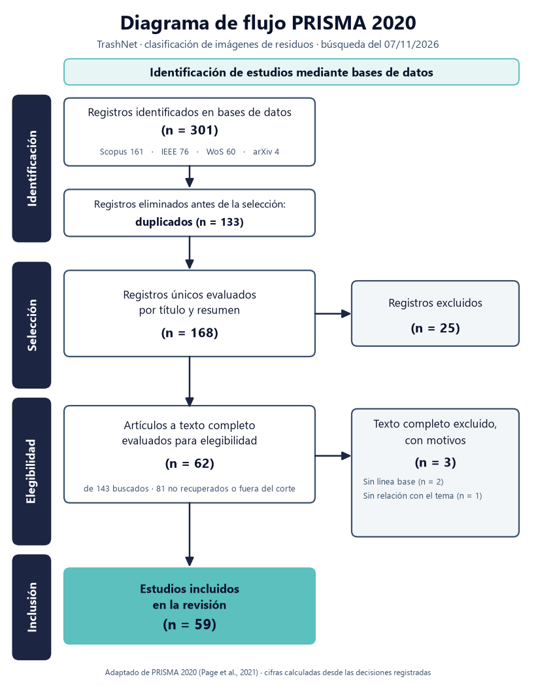
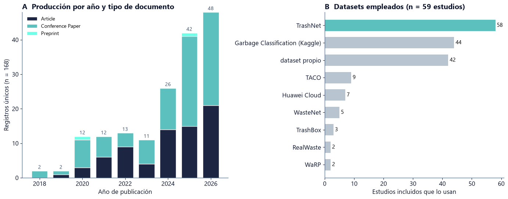
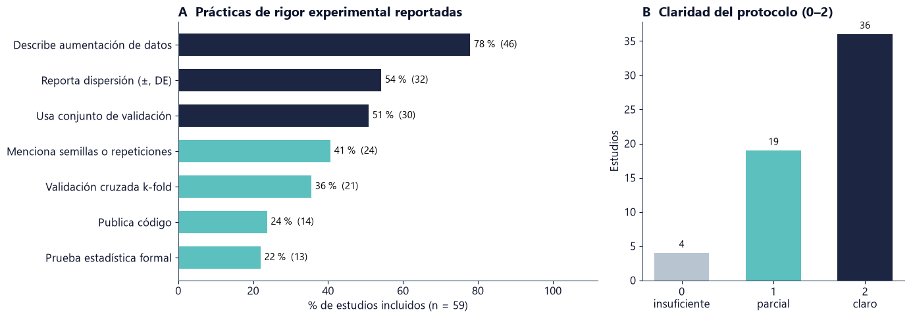
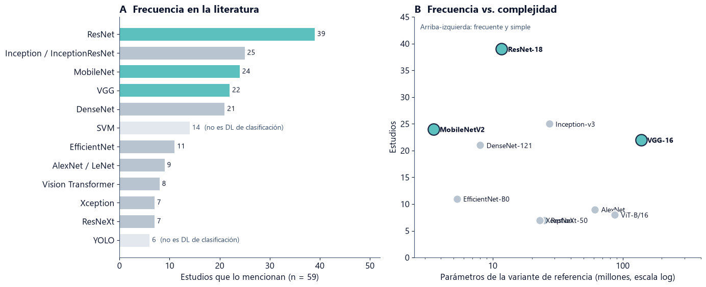
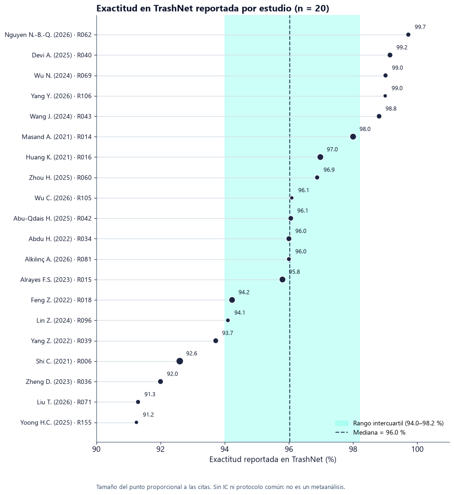
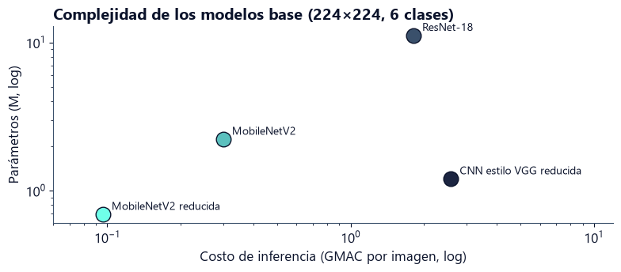

3. Revisión del estado del arte y selección de los modelos base#
En este capítulo revisamos de forma sistemática los estudios que clasifican imágenes de residuos con Deep Learning sobre TrashNet. A partir de la revisión seleccionamos tres modelos base, los analizamos en detalle y comparamos críticamente la evidencia publicada. Los datos de la revisión (registros, decisiones, tabla de síntesis, calidad y frecuencia de modelos) están incrustados en el cuaderno.
Resumen. De 301 registros (Scopus, IEEE Xplore, Web of Science y arXiv) quedaron 168 únicos y 59 estudios incluidos tras la lectura del texto completo. ResNet (39 estudios), MobileNet (24) y VGG (22) son las familias de Deep Learning más frecuentes. La mediana de accuracy reportada en TrashNet es cercana a 96 %, pero solo 13 de los 59 estudios aplican pruebas estadísticas.
1. Configuración y datos#
import gzip, base64, json, textwrap
import numpy as np
import pandas as pd
import matplotlib.pyplot as plt
from matplotlib.patches import FancyBboxPatch
from IPython.display import display, Markdown
pd.set_option("display.max_colwidth", 120)
pd.set_option("display.max_rows", 80)
# Paleta del proyecto (fondo blanco)
C0, C1, C2, C3, C4 = "#0B132B", "#1C2541", "#3A506B", "#5BC0BE", "#6FFFE9"
GRIS = "#B8C4D0"
plt.rcParams.update({
"font.family": "sans-serif",
"font.sans-serif": ["Inter", "Segoe UI", "Helvetica Neue", "Arial", "DejaVu Sans"],
"font.size": 12, "axes.edgecolor": C2, "axes.labelcolor": C0,
"xtick.color": C0, "ytick.color": C0, "axes.spines.top": False, "axes.spines.right": False,
"figure.facecolor": "white", "axes.facecolor": "white", "savefig.facecolor": "white"})
GUARDAR = True # True: guarda figuras (PNG, 200 dpi) y tablas en results/estado_arte/
from pathlib import Path
def find_repo_root(start: Path = Path.cwd()) -> Path:
for p in [start, *start.parents]:
if (p / "requirements.txt").exists() and (p / "src").is_dir():
return p
return start # fuera del repo: guarda junto al cuaderno
OUT = find_repo_root() / "results" / "estado_arte"
OUT.mkdir(parents=True, exist_ok=True)
Datos de la revisión, generados desde seleccion_PRISMA_TrashNet.xlsx (JSON comprimido y codificado en base64). Contienen cuatro tablas: registros (168 registros únicos con su decisión), estudios (59 incluidos, con síntesis y calidad), frecuencia (familias de modelos) y bitacora (cadenas de búsqueda).
DATOS_B64 = """
H4sIAF7l72oC/+19W2/bSrbmXyECBEgwliySIiVlTw/gWxJn247b8s5ldzc2aIm2mEiimpSSeDcO0PM2zzPAAOexnwb90MBpHGAe
DuZp0r+kf8l8a1WRLF50oSzGijFA4EgUL8WqWve1vvWnR4F744XTwA8fPdN+96dHXh//P7poNPRHO9ojZ+z5+G40DB3fpt6Evj3a
C6Zeb+jSCT1v6tCVRrtdb+B73+39Mg3opONxbzjzgkfRwV7m4Mifep98eVw9wFc/+pcdTRmMkRqM3lYGc+CPr93AHfdcbeJM3CA1
qmanylGZ6VF1lkyR3qpyMM31pkhvNasclTV/ihaOyqx0VHapva3rle7tVnowxrLBZGfmcNb3Qz89lqMvxWPpemMtcIdOz/v672Ot
7wVub+poPX+s9YZO6F17vegnV/NGX/9y447dkL4Ebuj1Z2ASS16mnX6Z5pKXaVRKEp30YBrLBqNnBqPMYjKY5aO4+ySnXkNvlJrT
TqPCKdX1UlPasqoci1FuLEaVYzHnj2URn7Pb27nlmqUYpG1WObVpEWKYS8ZS6fYvJzisKrUPvVWKLVhbutPapaSfZVc5o531iNiq
krMY5bi/pVc5Fr3UYjVX0uFKD8IoNwhzBXVp3fkwyw2l0n2SYdnW4rGYVaq0hrUeIZnWZnjUma/NQgdMx51oQ9cJxt74JjNCuxRV
mZVSVauUUKl2LO35Y1m4cvoKVFZ6MGvyY7NxRwtp5PfdoS+ElniK52i+Nvz6t7HraFdO6C4ZudkopbMYra2UzaZeikiMKpV901hv
LxgrqabVboZyUsKoUkqYzfljWTiNVWrV5priotpB2aVIWK9S1TdbpWR7pe4qs11uLFU6eMxOOddZlWNpNsrNS5WGTLMc417Jo7ju
UIxy01KlJ6FplpuWKhlxc01GrFep/TWtcotVJf9tluO/VbLf5gJPy6K12k6PS7O93s5rV6DhNzvrzWyrCseCtUBpLzOY7Vhmq5yv
pkrRaK2pu2/pxJaTIlXKeau53o61KyEfq9SGsytgJ5a9nveimvlobdNgMkzfXuJF3k7K65RST6p0R9iN7RmKvh4TsKrYZ7ZRap9V
meRhm6WWqNKhNLdnKFYp6VXpUOz1lL9Kokp2a5sG096mwXS2Zse0GuspkpXMS0svxeqqdGy0FjhZFgZKKpmXcnzXrEAPbDXvfwjl
+GwlQ1iTv1azK1rreR2qGUy7XMR1K7XhVmfNUG0VM9pulGKGVXpW2/r2DGWBNrwwsFXJEpnbMy/N9eSVUQGXbFtbNJZyWSnVbJPW
euZkNYNZMx2lmsF0ShFQlYGaTslgY5VD0dejH72KJeoYm5+X0mMwNzMhm2AoneY2LY61TYMpx2orpaA1XQ/VzEt7mwbTWU8WVTEY
vdHYpsHo2zSYNdXcxjbaVXqjnJ68pS/R3MySbGZ/WHea0Q3yWj1b+XmfQ2k9KKppb9OG62zRYPTGQ1pnXd+mqd2Q4NmAqq3rdxMb
GxlC8/6HsD2sXt8eVq+3tolo2g+KH3W2hwUYD4rTG/qDepstEhXG/YsK4/5FhWFtEVM0tkdYGNskLIxtUuuNLeL1ZmOLxqJvzeY1
H5QryDS3aPeb98+yTesBuMZM+0Ft0dZ6QZUtfZv2Zt5mI5u9s5mxbIT4F1WXfvvB6A9pzzWN7dlzTfNBzWxzi2bW2iYCsrdpMK1t
GswWCYBm5yERo7VNEsTSt2kwxjYNxtweArCa2zQx5bAJqjRyrW1i39aa2UPVDKa9TYPpbNFg7MY2DUZfL622msGs6TJ69KiCsZhb
NJbmRsayCUFgWxsZynYoQrZ97340e4HKfR64k8AbTyvfXu35tZRVjuEPOOSG01nfK+44AZA9+nrq+Nrbeu2kvqMdDNwxfT7A57fO
+EY7qNcu65o71ZxhXXtC/OtpXbtwe7e9IYA+tc9OOHV5b4jNMfWwVWYh/eRPpt7I+9Xt0/b55A9n9Jsz1MbuLOD/pp/94CPdLPRn
Qc8N8XR/HLrBJ3EXZ9xPHlTnl/c9Gi6gkJCTae9+qGPT4d7Yo3WaVBy1ck7x5a008O165o6nLs/MKoPhsTi4gTvl1boMnHBw5k53
tMu9g9c72gsnuHJuXO0gPS1PfnRubobu0x1NXqxNAn/i+WLhCPiQ73bo4rl8t+6bU+2JAoTYG379S4i7PeUr3GmAz3zJ6de/ii/P
NPeL05t6WPIdbeTg4K9EnJikaywK6HZH2/vpYPfi9UFde+MM/QC/Dol2ZyN3zJ+d2dQPnmmXAybp2XAaauHA/6xNB84Uf1xlWaOB
InqtOb2B537CQTpl4N0MsO1wsIel7t1q/rXW6dTtxzvaZ9pfPX80cQKc/NmbDjQflwQa71I3/Oef/1U7ODsLeb1xPd5uPBsOxZdf
rgNCgJR7HZM39Xv+kBdabHSnj+4qmAccuXaGoUvr5IVglCHmXzkYuiNvOOS5iw59vPaHfeX7J2fo9cHrUtc5NE3T6Og0mNHBnt/3
bnzlrEng4iysmdP35WkFDVYk7e0RLVzU90BvP7rhR7Dfbv2Cvji3jnaqUp7eBuVlthQmNtp82qHcVPv429fw4yFB8p5ISF7tlHZY
WNfOA7/nun0cCrUaNy/Rjo+OjrRjUEAwdiSRKpIGd9r3bvj2O/EnvjBLlMgF3L3ybmh31/n3tm0Yhr5+P5kUaW5w4PMIOEOJ4Lvu
hOd5V4s/g0MwcSZkeupfeUP6qD15o+++MXbfmKBxcZ72pDdzhn+cedji2LDXs3Ef26qP39/J+61Gy6tR7V6oOZJsaWsQLYL0+7Pe
FDvC/YIJ9mgDg7nRT1dEoxGRf8akadc+xqdhD9LPKnkLjn7tjd3adMbbiUnX0aYpOg8cCAMiduvxgyZgUyHgN762V38Jin3pk7zs
YreQIMXh03pKcuod0O+eduZ/woI9D5yRS/IPcx4IGs7S9k8850zE+H0cYlvH1FwXW3+vB0kVFpGhI36hp9aNjtXJAuOu0D8pRXzK
4+ZLv4Vijenh3XQ5YSSEtYD+VqMaLGTPk3LvrtIwIR9nGFONh1H3aNOzeDw8O6tdHmi3njvsh1qn+ZjVhk77MZOUG4xCIo6YWuKV
H9MmwZlvzmpT3gnR9NJzJtDAPWyZWz5lOpjhqaDu2RTDwR1wTyJWkM7UrfnXNXypOcFUw+QMfIyCHiJumlHS8O8Kojf9XtGDt4t6
JZ2miTc6szz1NhXqvXCunLEPmcvKL75MZ84YlPsjvnZvr0BqPV87yothfzTCBN5IRa9Q/x2xWMDa1hVhpTcw5Ysk1svZCAPysHnP
8P/U7Q3GmOObW6IGWm7xhEvlOI0FPLmXKKq4I3rMYdWOxp+8wB/TtPEPp84Yw6WvYFdnxwdHp3Pl+AB3dEeRGLdtM1OSVabnWYqT
bPlczOduS7T6DLsrUgpWY1rgWQ6RnGRNkNWeO5owKLo3jmyBldV32omEmw67xRXw6juR7IY4x5RPs5p6u1U3HpNhp6j6NGF/BGVM
6VtJ5qBvA3OQZy3lDZbKG2aQF2+IEXz9y7g3cH/Vvv5Xkuxf/zrE51f153npjtmnXdnTjkfYKjWhir9lGzm9beoQ5b3pDDrXGTY2
CRLau5MZiEHr9jymgCce2f2k8Grh7Aq2KOyj/GUkvHFXD0tJtDQcejd8NS1Z7uR9z/ci0umFT3NWdaO122m1a2YNXRVqese29Jr9
SyYFoUxfwRTlb8MbLzPd3zoX50sUmblW+XLVZqFB8ebFCxD90P1Ct9jFm/CtYAxrE5BSdKdVjX9V9Yk4ynN9iRq0o310JhOHrvZH
MLV8nN4L/LVZEFsYGeGYMjj8q6kDxtSXIpM8jaMrPhBPT01OKq+A0LNiZwP6oNqPVZ3qznqL5BMpziSPKYxJHon4kvy6nC1lDY5V
uZKtcKXuwNPIO3cJPSX20uVddHvFrjmhFrJEYB+Bo41ISAydW2zWwe1V4KXcdTln3d5kMvRwqaTYUHvShTT51Q2GoL4sPzHNTmMX
GwqFbO221TLKNgJNcY/FT96U2GYiXEbGKxDpPK/AHV16a1J1mpyXORG0oRNgwsaz0RVeHdSleA6IpTqJzylilGkXIbFNnzaY3G2S
Xsk5kdmOqt4xm2hTX+sY0k/o9QaaFwJOUG8LO6pJtM6uxYAeNRbPw4UhXm6uAbTD12JE9HwanHt9LSwqBC7CyEuSGbHCRmg8WTby
UGZouaZWxA4364NZ34xrK0zxpR+GLtltp+CIp84HcLHT+hG7UcOBO4J9tw8Xq8ojm8wjL6AXO1dDoTtc+FczyKsCtylb0UfRxpGB
AL6uWLdb1TljNMEjrWYri6G4vJNveefMSqGJFYyYFR00y7jo9vC7YxBZv+/R0HfItYLnuB7RIlESnlZDjAmX8R5wQagRzwi9L5GM
BWHd+KSsgl/AeoLjh07uOUH/ysefHa1jM5HS0Rua+R32DtFXzIGDl+pY9ZYpjrAejSNm3W7JI7gEm0CwMug8liWOD70ptOdvpPNk
abxI6dmsm1UU80sKP/GGAyyD9pNwzXgjx0OApIvPh84QGkq3gLrDEbG5Yj2IyVponVLtgRCvnXQvT4V5PI1crlFPQ57xEAwCCiuT
vps4FOraKWlRtOfA+n1/GPJSscoiHhgWmVohuEHTqAFRpoZIeatV+7Vk8+kUF1g6hE3pSMvUo29jyKzuuU2ELS+69JtmYpXyMSKm
BmpsWpCx104AG4aILJKn5AcmwsF+SHW8zCsO2+o3XZsa1YyB92R0/AziO/G0Q0FyDZAcpCHWmlTIM2E3nAm7QTpC4m3mD4ckSjHZ
iRcO7lbQ6aiE8GwgstHp2K12yTbp5WXn0oD+y5nz2YVdNvRpyy50H6zvGFQp4a7OwUStFLua/VWRvqrR4KFZ2s06UYE8Zc4kRC/r
8SVtgy8h1iMvy2nC4kSSiI3H2+VK3LD4Mgqs9nfgzheR1X6SUE4UF2QmXtuH8IGicQCeM8bBoy8TCCOabElPLIui9eClW18FhZmO
ZJocgscyKjI2TkUZOoni4wts5js53Mo545cqnUto7jn52oe3IvB+WruKw/+RayWRUle30EsSi7ADGwG64lyzsIDKiH4FDQ7gxe+5
AeksUHI/wYGPBYDV+4kybhaZzXRf9gxNhm4U5fSDsnHBxmr0utTBdgdqXdHFpjdT+XAh606cD+fMSPKTovkKNMuGZdbX1u0FzkQI
vjGZiR65qKakewU+GQww2osi/CWIVK+bcKIZ2UL4JS4021zXTFwoweI3XMHMk7+/W2YsRjZlhWbhEgp96yZ+ZSftd6EI/hxpthNF
36HQBn1BfUlGR5popViMI/f0oOEwUShHIkNL8T2JNoApEtuqYa6hy65H65v0putqjG9vGMD1HWrP60The6EXeLEXCVNDX9KWpSnU
3HlJr5+EDSGsR5q8IPG1l/O0/wRhCQ//EJbu1C1Of50hG5VC9Oi7jSPNLOj8ki6edtp8TD3vDqrwQtaxgnt9exxDZzgQ+JDFFCIP
5+qzfRepIOE0EGlALjaCez0bqt5lDBB5Ce64Hzt8I/dtLOWXe32telv1+lp1Q/X63gSuo5ipUCTyop0TKLw/ztwUj8F9szzmobz4
VmYirGw+qEE/2JdgLuT5OoGZSdmGrzwk7f+8XmZ+AZPC14kPPZEcW333E3J/oNZEzi4Pjsbb5ZG+cIbse6gpZSN9VjrPd9FjN+ve
Xj0T8Y2YsUtlxp688S53Mbbx02oT9dcy8Y+KkhXFC5QJS/VYw2BKnZ/Yb9c7KQKd6zAjB6sQhvkoG90ky4a+n5e4Xz1o3WQnXY2g
PXelR49de6+iUqCTFIcxyFMxVrJupkIXqnXBOziBQy2TAf0QI0kKEo5HHIfta6oFUc+kAL5C/Q39j1VRUvaoSMIN4Wwl2YGHnM+u
4NfWXrrOcDooYkbeBzeYDPSOYaI2td0q1S7XstN2013HV5U2lTbE1itDWJaStBoHW0H1urOj8lp7cXRwWlNfGheBsoWTxIrSrZt1
w4wNISQ+XteuZh4KIgbQaNwBiEuKxmhq6aK8vcRBIFQpIU0fq88ajT9GEraOu8MoUFgXPS/LurZ45NrvApBlCJ6AFRtjV9D2df+w
pq5UpetmZU2poyZteuEIkcGpRxm/fWcAz80Z5QEM8CYf8FXhZuR3jd1we6BcbyqzB3P1FimHa86Lc3B84HfZaYrCpKRMCb0wlyQ4
HyeZiTJZmRIio3OjTKci1xA2Us8PLaAdN4QTt4NYSCOLfbxqz04r482t+IU27yJeKSS50XKSyOi8a1mJ8KaQ7SQLrzyu+pCSJFAi
M3g6NHZOjsTr6Hb01jWrwXMdzUY9Xa0S1YORkhQKLSne9CIgiiey3g9jK9KTinSkNilIDjzHtECpcGm7KUM+0a9icuRPmvZ//yr2
Ejkgq4mQbpINratOGWq6wjko66MT+hzs6WIrDfyPyNIkRuSPP8zGBfkKr0W2Pe/4Wj+gDDVsgDjV2VNSnWvuGIppj5RQqnbwJvi9
0N4LOabK3AvzRWcE8sRRHHitg1HeYFthv4DRqQkDtIBzkq2LHVLQISl/2BOpTehTYevlMpssPcWI1hhYVbpWpbWgaUVuZa1L5Ud3
dX9fuChm4sz7zEahAjSeLQ5fQfmVXCMJUNn1pvTI0MfO41xwir5RBWq0Ljs0vhAUjTeGYpK4munxkqlhRyXzWtPJh0BPiKf+jUmB
MjLtJM/BljDrzdbje2Iw1adDGamy8SG5pvfYa32Oom44sMFnkAk1crS9K1hYQ0ym44yi7Ay23LTn8JWRftN1o/yLvG2m0BXqr2hJ
rjyEDPaGlOE2HYxkXeoFVsMfgWnB1ubcOZnjkdKYuv7wE30uypIkvQJSBwkfpw42iVAaiiw5/DLAbrAMO9vneYkZ10yHv5TH3KN7
e4nFVUF++Gr0L2S0QURFJIujg/Lx3grrKTZMS2oF92+hd71K8E52aG9r7/KODy0QCcLXce12XK0SYqhYsFvM6FRSFnErbyS1If9m
zEQiMkALq0ajsFKSEVUsY8GVIbtFUFhHizmjnG+jmVb1s8+sijLevz55XZEGriQDruVlOEihkdDmF8uWUaVkYE7YNeK3njalOoCp
uuoRm5QYC7EzMtk03kipRlAV7EbdajzW/vnf/rumIxu4E3sCKArDJXFUEX7NlgIPlWBUkGWJAGPv401A0A3hnfOpNpnwv9H0Q6OZ
SgZmjAUmWFKwf/ZnmbQM6ymptVJJTuyk+eT3LBaOpDhJ+u1jhw5qoUveFLKQlHgtIamcvO5qr8c5Xdhs6bsfhJewPvHxe8PUW51O
pxSmopmufoqeVRV9LhNad6oEWEuhLRXJ3WiQpDDYOS/GwLpwXFMEbRacZNaT1J0UCCX+uJ2EASRsA9Tm9qUNHZcCZbI7YFCZsLPD
WTChFcbWp0d8AgPHHHwgrnMrSpGK8pNlzEKo9Ap/qyT/ssrYxsr8IlUziaQLpB/XjynHg7Xja2c6hTfwlOsHgs8esmDy9UFqnIOW
Rs3+X1BVkE74qPlXH2Td0JU7nN04CDI5wxhHK0EqSK1XPRNciCqkObaA9GmRMxKFHOYUF5iWjeKCZs00DdOsfS5liZtZS3z10Xyb
POoVDfKVPIPF3O1+a7HLFDZ4ykZdsDFTOV3FqDHCGykAIjL8p1VvUWp35A+Q7Aa4bhYdjuqk5KlWW7oEUZZH9uGn6HSgibQfV2JW
bIea0lLYzs8DCqpStsaLmfY+SdI4GvfG49psMvqMfVKYTEauDQo1a7SPR8RvZjHH/+kcJUouHLRCKeT8m5tb3JVsetAo+d6X5mq4
ycngFk2UIbVK5Wxk2cO8Z68JFnWHwsJiat6erLIThMSxqDC6Ds+Pd9gBg6coc/aAa4jMFOoohG4gSvjeO/0ZktMp3/KC7e8PE9+f
kmMrW9M3Zl53I/2JkJi1pAIrrtSdX/eXFaun2LJYlSh1YQ9VxGFYaHuzRG3Yts4SFT399EbtSymJalgLJOrcgWwqVrYxVNGqhFms
gF+zkzkFS+ZiS85ixEuOkckM2kwRnvBMByKABWWcKNMjzrkTyzTSvjG3pI/lcQs7dQSsHjJ0oak6vt4T1pmo4pvBA6Z4ul6K2Z1X
Cl+IV5jGHaVTspiFauoMCwyKKihxYpysRHxyYW/L2qUB7rbsRrvVaZZyexlpt1e5kawIF7oywmEV0J+R/5Z0Do0Xlt7mFRnDVGnm
zR5yqZ2pOodg4M1Y6TrzMV2nwOY8Tbb2ISQ1vVDxFmYekU/+EBEPDrrn8XMx57pBaRHLsGglEp2sc92ROy3i+Mp2gzfl4KB7cMQ3
L07+6IU9F7gRdqvO53Q6MPWy3UyMVXF2Gwthdit+vzsYi3zqvv9leVBmQ0lsS0jw9RzX0WQ4CxO/MlLeRfmzGyPtfvaGlBg/v7Jn
RIYV56J27MfptNlcgdC3HMXWYYCumKphqiVAZxB+3cib/EpKw/f1bKZYni0IPw+BSiepfQilYPYAtRifdcT+on4uayxNZwIQs70k
verQnaCYgu63w1iDY2g3PSavrtsj33VMczsr3vGcEO5ZGcpB6WXvZS+5FTtt+MoYazvNAvguFu5ycHulgP5xFmOM4Uk3vSEFDU6c
ve7B7rmHm+we7B/yf3QhrqPTOaWoiDv2nbBXmyA9blTrXfX5P7os7FF636DZQRNCkTKHJgiN9noJcwt55v9fy7XW8i640ncDa9uk
HnYKJknl1TsSQ92dHPio6yMUQ0QQEYISNorEiI5h2KVfzuH5p3qEx2lg1gdtk9g5n9mhGt07JG32fa4K87nfm4W1iwMuvHYAhgSP
mPCLkV0aAXQVukPjKG3iq7+mu/H+/Tj2P4NhQ/Pg2cO8CIaNGqAZE0pEB2QJHQNdHy64W2owwE6gHpi/8HzCCsmxp7a9GzbR2ECA
/oABNe1auapNPV0stcagqgohFjvR1dS2b+iEWysguH+rcYZtxOSiwPvComplG0raBlS1yLifW6htaI+1qxltZ2SIUmQR5zDaGALO
Q/+W03YZPhxe8zQWYU7d294xbyTL7tujjpmqB/9thHP0M2ow0BeJAY/eJykGL56fEdrRHMJ5PkuBtsCR7QeosnR4gU4jdI29KeVB
MhgSRCEYQTgK7+DNbzbIWVmugWMGanUNb/4d8+YWl1eul5zAkT3KO7o/v6ZwyjQ3nVS3xQ5+taTwR8D3w1yKgfuWw/ZZmaC7zECW
xYULAPiICAs9wswSc1B+vPVAveiN8xmpb/Pj6JxxdxOIfPZGq97Qm+UIKw3UmXvgtkHyVZiidyfPCgIC84ACBJZYq60h4AxsgJaW
hcCVGrZY8y2qPtks4XWK0PkIbSyu6X1RkNE6Z5edisrp/QQlvDuigp4DBa8kjfC3FlpAE83Bmi2zXFZ3hqTWQwu4m7gi9CxEGL/+
rTcb+hvGEZMQ/CsEzIh6ZQGXrBujHnq3qXr3rBIHQmkVVZiqFaUAnm0ZC5CE4hr5LJkxMHXqeQx2dnJQi4eqKrP0mKK62e/yvVas
qt0GWb6ij7SplrNRJT/joXWRx4hIPWaGvl24QC+GjZ6V4bEilwCRJPVmzyCHuWaHfhSWuqtAkVAzLIZajuG2gxhQQCa7AGiZOiG6
jtL8x3NDGWdQw+pITvOk8yQfzG902jDDLfQ6Af5hraTGnIYIKDGYjWXHceLQcv/YSlJ/PQ37m9n2m0ruTSMWcS4v6D1Tz+bM8Rml
m5nqlix560AvzHMV+ulFcXewpApO7e6mcka6+0pgKNv8PmtzxG/bgmVVBauppi79NmkSd3Yzu8XOO6wfJF/e1GuHudSlS/8zQe+d
o7AXs147pyLvYH51nAzKCSe9y10cLgcUYKirkVj1hyi9oigm8sHzp1G/gbbdyib7Les30MzjSM5//gZbsaxXBruaTYFoSciRDxTU
kNTHZhsRnj5uSG4udOVmCBce4i6S+rE/A+9qJnsYgUlSTwCeCr4ypJ1a36J0+g2322imqk+vZrXf9h3MGuVZdMF5xs5nTyOgjb2T
2h6qUD2XuiYW2fRKSXoIgdhfBFQm6uvixC9RtzChYJsogCCuNJIB17RxH6azjVTmyTGqgQufxJSzflatcG83dhsdy2jr5hdBSgbS
6htNs5zeYM7NQ1pjjFUZOFuaIhj7toUGPh1gz0Yp62ylxvWYMYp51CCbOBVn9wx9ms+oBiw+T0hUkQyhSkab8MxFLfOb0x3AXtcb
4uvFcyEujbps0gG1KpOZkesb9JZys+gl3DQ6+jjrn49HQF0Y+VYCm2zoZv37+deht7lxCmykZr3ZePxtPfOblcBm1jH/SkkMTtAh
EviUmGUsD/+lvYbYBAnmUjS50g1ZB6jX0LuVzD7nLBzIH5lDuADlse1ysjadqCifVRWhJwg6dwdgvgt1x54mUZVC5v41oY5DrZDQ
xbObG0E4ToSqTf4Ar0+hk+tb2eJ4ejtx51SvoO5E1xIVlz4X6bgvXxwc8pTRzligotPtcqG47+IlvjH+V9W9EZtq6ueh738cQCZ0
CxI+u6xsFOraIr9TcW6yX1N1b0KdsIpzIEX3hfNYJ9lJA9VwPg9rPKGSYgM3+/led35+Jwo8LavVbIrsTngqLKPT0tdL79TTlToV
vUaWQW3af3q3LkCcwOTMbni/iUxfCFZHdpQE7hU0UYkOOhGoJERuLDUgQa4QqeK3pVmIKJoTIonAg3CaSBwZF4/rhDNIW1Sx7w2j
+v29PvBZRBloSFXCWcR1dGd3g0UleWgFRm5PrhoepyrwGvV2p5peDVvS/a+pZnAeQEh+pPhGZG+ILioCav06XdZPqho5eGvxRC61
QpwFxSaZtCDZjS3ra2wgq0AXvsYmvI21kjZDY37Kj6D1O0Aip72KZcrw0qBVyyCwEk1jYbD/u3AjSpn7MlIRf4nmuAiQM8zhpPME
//PP/4rAxozuzqX7O9JhRzuLypBaScRhhw4Qocege3ykrT+OX55OAGAIWECXWAAf6OCAUqy7E6kNHVgwmJL5bxGbIvICEQn4zpIP
V1Uf8ijrJyLLh6AB3s0ynZXNMp2Ve84E+8VNWjpsrKTfrBmtTqtRa5VKHezcR0X/nXJ3V09b2FKPxQKfO9Ee3v80PEhvE05o0OtN
XRbQz8MRofM4Yw9Wvbif6PUr5pQyugrBzIVSsdgsDh9yrZiV6mPISgF5Es7rl0pixJl2dNY9Ot0/OdJeP2fM96OTU+309eHRSVd7
/vpCu7zY677UDk72ut3j58cHe5fHr88EEjCJDMp5x26lWc9C2hlNC5RM8L1QHlBP1gBDbpqlMiBaObDe7DMrSqVX+iGs45svr7c/
pzjwF4dgrnZyli7nxws5BX5N731G0jbStBlgMvYWkqdQwkDRSn5yAs+hZt1MYZ/9BGky/WucDLswembWO63EQRdl42KwiCxcUwQ7
2kBSl5/CTJXZtvg8Ff5fs93A22Dc1LMc721riJ7PRCuerSHFTVrulurPe+G7Q04LlKgAeyLvP5O0RJ6+7tHzt87pP//8P9LauJC7
ovI/As1QUddI7y9Cvo2FIG1vOEj8ySiC+0mnFs1FBGiLXH5I5natHNqtPU8gLxvLvYDcriSsK4cZWA90I4WWI3ZQLkyec5cbwrHP
CLbETvpukIDY8gBYW/emiSJPWStsFNFNyM0hxG0RFFeu29t9o9Vu1FlvqfmI55gF6C0fRJ3lpQNlRsLyXzqoHsDaevj+Yy6NSCJi
JzFypVsw+0O6aGbl/groonG/dvSFyCpG00p78/YRJ/moZNofSxARGWmXkkE4cNOgB88jDpKOKM4JyGUK4LJ5j62Obe1+cDyOxVtI
tGiUAwW05gUPVxvOAlfBaqXUm+j1uHot9mo6wtLEmNAD+CpxQuwaCb1HZ4fPVPz8iAu0ECUzMrV34GVH/yk5N4bvi9kFdSlj7Gmh
sR/s750q58edPgDquW3gIhulebuRquPzBQrDIVHRb6N+QgeLiHwfQKZXAMyMve7g28A1RY2RwCOB0AcGCZZZFNaIPuOfta6EwGJu
XeTgh9IAseQHhfDSoWHpDdNo6negRHn7O4jlFZP5lhTKsAgu1551ocj/5khaa8P3Opwp6i7w1ol0nsQrV7wkO1qyaKINaqDmE596
XwRwSHEPRFjgL5+/PahxIC5iKZf+pKansYbCKJrXActAfL8doeVRs2dC05sXdqRTsyzjwUxAxYHJb19KaKs5UzI38Kxe26/XiB8e
oit0vUZuxnNyzBzUa2lfox0nDUaiZioEuhuDTeTgXBU44wUFUbmUqSgcDc8HtCHkcyHMp/bemJNZKDIesA0+kD5j40BTvnPCR+0l
cOQpPrrw6d+qVmpBu/nNJTxvJiYhaZucG1nqLkgNdqMdETVGLG7CIVAJ2HAJ1aiEbMfa4SoKtcVHshAwijkjIY4pxDGEtsgpzoUY
FDTjHBjpFSZjAIP+Y5hOjs6XjTyUGdmG3mybVQnNbFnae4quzHz+Xx7IaoSHt2OHsFBeBM5kkEnEWNCILUki4vDvSGiKMvorNEaZ
J0Y+ANmKbHmdGnijbqFMzW63S2mIGc628LnfBjF546qgKK/eRO7YpkFWj4rRI6m12ie05JTBknGi3UQtin68ePlaCYAiC0NFZhEv
FybpW+i/0UjCNOTxoUvm+YojSzCNQgleYGaA3WMMd5RLE8tykSiylr/ou4rM2Goq14X7QcRgX8FnBzZA5RUg8I+oKM/Xm+2lkjgS
B2+UbB4HZY/9S5nUEX720h2wZYLNlIDR/PFtGp89Khgf+lfMi+AdKNaJTKSIW7s34w/I2c2lfpbiGAXP2lL4hdjrU63Lt4yLV/p2
CapEEfshnibZGuXYR2T5hDDMjac7SlNDOqQ3Hj+NBoIDMFZsOkDEHqda0Xlm+/HTanKtNmnDrJ1pZauZVm98MmC6SanTGVkttXfc
mB7BmlohZLOCjidw6FE9SpQo+kOH8yFl1RxEOHHOEnRWKUcLgzJNJEt2GKa5YXTa7ZIwzWkqLHjmfSVDrNhs5Rv7bJZQJafBfwfp
Q+uThxroeDvjGqi3Am4BsgtM8FAhhQhXOUFSju0C6biMGqk/efm2+1QBYAARRZ0A4DlZkqq8BhSDrQNAttG4C6V8H0AMlVYuxCJF
jCPTAkwamXMRtiijfy4+QZyMl5wSp/nj57SF3Fhcm3DPw7xnSbiuetrSUx3IZtzOF4mC+xHF/5z47cCMu+6p/0w433opch0Lco3T
vZRQZD45ubh0O+UETOoh60JEcSgQQwDU2DTXPBwQTZCQusXYB3atabX1Zhb7YInPLl3CmH/kHTOSV4IVXBlrnUMiSxTcikHCNpd4
nDQhkxssoVKkDJr5zruF5Nm260lzQVqSxOAle3Mq85cY3A+kKRk6zCUi0hnWjkzhJNKQ8s5hFCshF2zpm2xBcdRmmVZbjcmeou/Y
xzHw1wi4AB2Ef0X2xSAE3TPM6rnbR67DyB0EGVQ2O2dhF5ZJBC42tx/0hOWdJGb5Ppe8AQOvnyvDoUUcoN4tiPNaU3b3OgzNNput
bGL0EoZmrM3QKuipuPEYw3KMQjKd9xib8En4lOdre/r+btQd3dZTLbQ//uPvw3/8ffz1f3G64euPzi3aaJNj+sev//uj9o9/y1EB
pwbFinhBY5TC8kJZOLeWXt4mNE+jeZftvJZevmLtUJI3tEE/dLnCooXGcLlOK2tKdwZs2wgAMRGif0XLBYaZF5Wsu8fQWcQ7Bd41
Kenx4bhjnNDjwyhfqT/XLQ3ODG0dkSyIXU5aFPXLyEWlamWNCh4/eX2qOcv5oIsaUNBLxOPKjCZJCujYqQKnZrq6qRWVNgl7wqLS
Jk1WNxbrA1XjDW3O3lgxPbqths5OgfA77ru/1t7QePqee+Ozc/zlzA0gUwUUEbIjf50FtZ9wJxx7leNeFwJrDb63/jOavwg0em72
oOBrsekYO8KkOs2oGHOrqiVO0V6PjJOiKmdH/MLixrRtctXdgc0pD7svB939Yg0vUbMLuhbHtJj4vSlSJpJz2q06VSC1ULFC/2GJ
ZIoSH+G1x3s6GDhXnOM/zOmUnAncHx1ZK1c+/sxNZXpoyY9t1Q/YHcw+Dh30L2SEMIcqxj0U1zvgTtC9yX3+Brkt+IoK8v36YY5S
X77Yrx3sd7mzgcxQgIugz+Y+69NJxUOPGiVeeQF1WuUS9LESKF+gs3scDKu5sjuN2jIxFz9LZT5HDUGKexugqqPFenhDN22UKZai
aH1eenP0zKooe4WqhQ3UPG3eSbBH6H6C1nekry3aOJLGB04ow86U9vXFG81GWW8eJa9w8FN0Lu8zSgFqLklbdEL+5gQRZgE9JIlO
Cw3jW9UwfHuXXyeFgYoahpHzmXA+yXyeDQnJ/H1d4KACAA0kfljfW5TfHG0z3dDnWwsCjOSFOyboL1jpsiYzKk7wP49DKoiLNECG
tthTbGqgHzhYJWw2Rg5jGT6UdXBqVt25ALrIiea2AaAzuAEmdd0A7ki5EHaagssNZJkxcoHEDZ4xcrdenK9I0vdZ/+uFfJl3M4tK
TZap4tewIVgZpryy1uNtgivfMGXZKWe6aEP6TlQMcOnAaS6QXNgoO2p/naR4jBj7I8QaukXYH/lW6Qm8sEcog7g1EOOR7NwXaJvZ
yqPiJFjcCmJToH7p1FqsXQ71K0U32Ud+a8jg5VUGpYt41jaHT58/7yarvGJBrkWgfUvQwLFOj4tT42PbUjV0cXqRoXuvw9ust7ra
zowrMga9YaXj6QdKnmjshsOr1mRaHBjs1P2CSbtBp7kbMdmqCpxqIYJLPXgRyMexKuonJ5Q0deiyQqsFEletUUqrTaP3LBvABmqI
1sjuenfXSqH7wN+IPW8bxvWR5KYWV2RJb65hnfFyLeYDhP7weE7jgZAx8oeJ+k0CbkhVGwngKaN9x1nyGbdcZ6U43Hf4ysvZ21YG
HwAVUDIXnuNufWfClV1CrRFJ7X2ZIH/DCfLpfAKiqzFmsyf7Jcx6rAHxDEY2Ayamh52QBAUSRtnL+PDKaj829WkHNtEdOOQGtZ9t
dudtJGBALtnARWFtmK7+CxeGzR2ekMCD/y64nV/JR8nxWepm0UXIYmp8/gqlMUq1zo5acp0qpCks84mS6XF3KOBzmMcOJ9G4gXBM
g65dWUkTTtOZT0XVkQ9hhr7TkCu4gcL1RAI/WD03gENdBvlAxxFSvMgzADtD6Cn0JxARBa3b4tIL7hHDnI5jZZmGrxJTN+ZjF6Qo
U6QEUwtwnywbsxBtRZUPEgcaLbsGN8+0ZjBcI1BY78DKMk+dx8nmeiO/caLv6on2qTpj7N4eoewWV9iddRUUnmxNHYynaEF3Egdj
agvQRiMZRVoBsAHGU6UAzyn2abbqNlwoIislnrY3SEwibYP7BEe4LROfEUEcEb3nBvcB5OT8zsEewYuLSoyH2Y1Z11U15R//hq0I
3x17OUG9nN78/uv/AXiZ9vV/5rSVjCDGWvAkhhRiRvrjULhBC9s4LMqRDLPQiREu4RK4FctotHcRIAXOGjwwnbuYbSs9/740leLE
iISNfKM+TUv4xvGUFH6yIsZx5t8Zt0THYaY4OD0luYl+qXLzMF/gHL6YyjlOKap0qCYHghekKbtCRIFtbhznTybkjplKo8IRcUi0
TfisIbeLwmUMrbhNOEybzCLQjbSfNUJGJ2Ltzg0OPqOinVjQxp7VOQl+wqK4Zo2VWakbETLE+fFptxj2NEurHbO5Kxu6hj2PTYmG
3rkDxc5/9JrpfBsqNlgXwMxjxE9C8Jy4rBcT3qMjZkGLuxNhpcAXZA4PlI5RGGGNHkBusSUJjZjENKFhxQ2NTuD0BrfQngym00n4
bHe3J8/uiZPrfnCzOxQnhbtXt7vohvv0rqWo26mwmmqO4FFvAGWjPxKlqPv+zLlFCH9PkXjEVnqLkDgE+5JRCewKoh3gQQroSbd/
A00/IN4cp2WE3M2byec59i6swoAto9U8lujv1dnFInjSGm830GH1LjrsKmOYT1GpoN1KwYdvjjm0ATP8tTAlKedcBAMwSW5fiKJd
sVW5jZiALEXwVobr43d90wSxkg0cKBlyLfKVQSiq6DkxyiiDEoq9J3cVBfqncgSEaasWrvMeDGdXoD/m0RCBIXX0JXx8JJDA0mVA
NFVRqAFT1VXQy0wGFOcbmah51U4VLGK4sQ6+r4zhFcWnpVqv732a1pfc6e8VfezWTxjD8BZJPUr3gQVh/TOHUeHEuhNGj+hU0J0S
30gDD+6phm5GjqWBSUGKfVhGITBrU03PiI0EHHtXw+3Edo7HvDMw89nwv2VYTTQg+eC6Xv2TbnrNekvvlAO+SLOPu4ytsnp3qgla
plTftVv6tlXiXkadB+ZX9ul1w1pS2dest5NT5qxCdIEwwBkYg3JgsNaZUg9u0BalO08l1B+dD69PH4kQ0siakoHlAeozXWhkWEUB
2Yfwit9PC/o/EK1jh85YSuLo7/4kCW253fpIYSM4U2SYSzdAj90Aj3i8jMXtKoZwTW/vwlqwGj/Q6chGIwZDW55v4TLboBcxKQTm
9cWVqKIAzaMRC/+1+K/Nf9v0l3qs4C+fQ+1O8ZfP0fkcXZzTob8Gn2nwmQafafA5Rov+mnx/k681xRG+tslXNflMS+e/fKbF97T5
V5vvafNxm+9s831afH6bz2mLz3SOzm+h81voPE4prqCi88I9AurtH2epqXkGnUbMKAVpHe44NsTCg49ot3GOKfx7VC0HNQMsRFky
5scyVZhxfS9en/901L18HUGpEme6cj446kXaE14u6sqDkLAmdwue8cTs0HNmUL3Cpz9oPOp4qPVHLIeTvbQEUTbuhEUd2UmmupQB
5OR2UModGH+piRu9MaKtw7xl0dZp57bLvC1iztkoYltYc7aCmSw/L7lcbN6U2WV+juQRuEtp8uld8WnqjJyvf8cHWj/woqErLFZ1
8c5QnTyiFRHpnli0W3XmftASuoaPD07sCSUUg4avJErrjjb2teHXv41dh30EiGnQjXIrN08MqktGdgRQ358A6gfDze+8p7mFTFRn
umG8bs2CdWvmiF1PVkyuVX597ISEJfFaxeuTI0+5SoIkTb1gxY4kSLjnPEs4HtFg/P4LSE15c5Gy6/V9anl1q9IWMuZ+ENpKD+ni
8KVHBCZ0h4In5tZNpnmpyxRpPtSoQGyNPI/GZTUEhYXvhtfETK2Jwnol07VWZbFmM8dW9WK2KlZJroz4y3fuFLHJg0TmgFmaX0z4
vjxU2TjhD6CI3gB0hDn6+hfS2/xw7soQIfmUHBetigNWRbOWTBZsMjDkr3+nTrWEVzftDc6g7GK5zJgV0s7HTX4QaudupIbqOrns
aMi5LRPffQ4Bqqmw6mrSGBQBChsydMLcesadMZC1vKvbybIaqWXlSU4xyrbCHO1iUjPF8pkKK8wtYo4VRkvZUEkttaAXrgg2SMFG
Wx57vAd97OvfWIvKLeLeUDZD/IS97WFONegroUc8yceiS9pBglP2xpCfNxBfO2Rt+xE/JYJzcsuwMEUqXhdxEM8Cc8WiHJ7kWR/d
iNZOPDtaD71VsB4qsRm5lTCUNTCSNZDkZCo6STMz+zJNL57xM/AZ4jzgZ9C+3fGM3hBpiRPEYdN2bXbm6TWhVYL3q8IIbhhfi2aA
FxBKLavfPPNPs3O7grGW42Xqr7k5ljfcEfeL51hfzMrkvNqKDpjT/tpFAuEcbZxDahhGPCcvU7OTBnUFXRPAYFBklHuXZ7gogJ8X
s/YBjoJk1lgVoEtUHpXbptlgUZZjCPWg7/NSQbuc+rnJ22/U9s3iOVOVJTFbQtAWiFgjJ1bTVH7EA6ExfZhh59H7KhoDZYeAdWuE
uhhGzLKazSczKOfZM1CrZxM/LDZm3lGLgF2kUUXT1U7tMDPhoaaqJDYz4i1LjweqhHBoAI7Y5Jt/+6XtHKM5Uc8gVVU4OPL6g3dZ
298lPkV3KJwWXdXN1C2jTIuQ9Jlp2ZsS66U5uWF0RaEihYK9h6KZuhtWM09ROlk0HYfwD/Sm7K+Bh+CDOy3YInTNJ7P2SS/eHpLd
mMlsCGGZ0nuEqWjPZdck+DGSCulDLcJXuYmi7H+BX2GU58LqlWPZ+Syj3Uux1klIRFUnBOBDMVnMszU2NQnkG7mCTxRV69IzciX9
VOjROZnxagf+kPfC0fPjs+PL4zd7dPAaziC64hFyz3V9lwI27F8FWsuYj18eX54c1fb2u7Ufj95rT7Tfx57R3z/SnqJ73aF2/tP+
+6O9C+2/wGGrt1KH/jP5cMWhJ9rh64PL9+dH+ARg1acaOtslR3oTHBG3O9k7e/HT3gs66o5vhujRpTFtXwvTU1rWwxlMEVZgiS/z
cMlhrLdrIugUR08xdZzLAyVhBx6Jm+HXvyZ6jK1zFp9/FcqsZeTui0nlH9FRDTMtxVY0o1z9/W4C96e7/rQ+efJ7dBDvsTNMu/Sm
Q/f3j56pc8vzg5P2rijI05vO+5mhVLQf3Vskr/TD7FnZidtjSz2eJrjLHBl/AsOE1kmMErsU9hwaJ7GWELKPT2nEHe5K3zpYGQJA
yDGEwhsTja3O54V7Q7FiWiYxs1ixZ5qTHYPdiVcI0Z2WFohMthBGyBmpwzjA9/n675rotjd1fY3pln3O4vXoHfjOmdV6616RM1YJ
x69JB93fPEkvAO/z9795Er+JOHR4SSfKWAVoBOv0+0fc7NwVzbzPqYY9usHJHp19JPY5DmbW60hsb0TF4S2BnyTknDD0BUdONnYO
5hFeNOHATHyRdqNgUwslygc4+ZByisAo+mQhsOue6uqR0BjQgg+B7kFxyQmYjgcbcUS+Gg63kE3Ij48WFTNO7040+Nbvak+wFsy1
KOx3M/MFu6dTOk8zi+IE77xPylocvD49Pzk6PTq73Ls4Xm09EKf4TexTf3L19T9CWLvQUp1PQKZwpA6uzORzuqHcdg30x0aYk8PT
MDVrpv4DOANYSt/9BWHZMPwFqzHF7WfuD2iP2Cee7VN3b9yC9xnbHH403011us8DV0Q45VpJ1YNvQJUGIQP2ff0PTLsbMXhaR84+
Rab8VEwsVn3y9S+IVjnCpOyTn1PcGXP5h3/5f+KFCd/fZwEA
"""
D = json.loads(gzip.decompress(base64.b64decode("".join(DATOS_B64.split()))).decode("utf-8"))
reg = pd.DataFrame(D["registros"]) # 168 registros únicos
est = pd.DataFrame(D["estudios"]) # 59 estudios incluidos
frec = pd.DataFrame(D["frecuencia"]) # tabla de frecuencia de familias de modelos
bit = pd.DataFrame(D["bitacora"]) # bitácora de búsquedas
print(f"registros={len(reg)} | estudios incluidos={len(est)} | familias={len(frec)} | búsquedas={len(bit)}")
def guardar(fig, nombre):
if GUARDAR:
fig.savefig(OUT / nombre, dpi=200, bbox_inches="tight")
registros=168 | estudios incluidos=59 | familias=12 | búsquedas=4
2. Estrategia de búsqueda#
Pregunta de investigación: ¿qué modelos de Deep Learning se usan como referencia para clasificar imágenes de residuos en TrashNet, con qué desempeño y con qué protocolo experimental?
Término de búsqueda:
TrashNeten título, resumen y palabras clave. Restringir la búsqueda a un mismo conjunto de datos hace comparables los resultados. Una cadena temática amplia («waste classification» AND «deep learning») devolvía miles de registros, en su mayoría sin TrashNet.Periodo: 2018–2026 (el conjunto de datos se publicó en 2016). Idioma: inglés. Tipo de documento: artículo o ponencia; arXiv solo como fuente complementaria.
Fecha de ejecución: 07/11/2026.
tabla_busq = bit[["base", "rol", "fecha", "cadena", "filtros", "n"]].rename(columns={
"base": "Base", "rol": "Rol", "fecha": "Fecha", "cadena": "Cadena exacta",
"filtros": "Filtros", "n": "Registros exportados"})
tabla_busq["Registros exportados"] = tabla_busq["Registros exportados"].astype(int)
display(tabla_busq)
print("Total identificado:", tabla_busq["Registros exportados"].sum())
| Base | Rol | Fecha | Cadena exacta | Filtros | Registros exportados | |
|---|---|---|---|---|---|---|
| 0 | Scopus | DEFINITIVA | 07/11/2026 | TITLE-ABS-KEY ( "TrashNet" ) AND PUBYEAR > 2017 AND PUBYEAR < 2027 AND ( DOCTYPE ( ar ) OR DOCTYPE ( cp ) ) AND LANG... | Incluidos en la cadena: 2018-2026, artículo o ponencia, inglés | 161 |
| 1 | IEEE Xplore | DEFINITIVA | 07/11/2026 | (("Document Title":"TrashNet") OR ("Abstract":"TrashNet") OR ("Author Keywords":"TrashNet")) | Años 2018-2026 (campo de rango visible); ambas casillas Conferences/Journals sin marcar | 76 |
| 2 | Web of Science | DEFINITIVA | 07/11/2026 | TS=("TrashNet") AND PY=(2018-2026) AND DT=("Article" OR "Proceedings Paper") AND LA=("English") | En la consulta; sin refinamientos adicionales | 60 |
| 3 | arXiv | COMPLEMENTARIA | 07/11/2026 | all=TrashNet (búsqueda avanzada) | Fechas 2018-01-01 a 2026-12-31; include_cross_list=True; orden por fecha de anuncio | 4 |
Total identificado: 301
3. Criterios de inclusión y exclusión#
Criterio |
Aplicación |
|---|---|
Relevancia |
Clasificación de imágenes de residuos que usa TrashNet o se compara con él. Se excluyen detección o segmentación sin clasificación, robótica sin clasificación y otros dominios. |
Uso de Deep Learning |
Al menos un modelo de Deep Learning entrenado o ajustado. Los modelos clásicos (SVM, k-NN) solo se registran como contexto. |
Métricas verificables |
Accuracy, F1, precisión o recall reportados con su valor. |
Modelo de referencia |
Comparación con al menos un modelo de Deep Learning de referencia. |
Exclusión |
Arquitectura de referencia o protocolo (partición, entrenamiento) no descritos. |
La selección tuvo dos fases: (1) título y resumen, con decisión Incluir, Dudoso o Excluir, donde los dudosos pasan a la siguiente fase; (2) texto completo de los artículos recuperados, priorizados por tipo de documento y citas.
4. Trazabilidad: diagrama de flujo PRISMA 2020#
# ---- cifras derivadas de las decisiones registradas
total = int(bit["n"].sum())
n_uni = len(reg); n_dup = total - n_uni
n_exc_tr = int((reg["dec_tr"] == "Excluir").sum())
n_tc = int(reg["dec_tr"].isin(["Incluir", "Dudoso"]).sum())
n_exc_tc = int((reg["dec_tc"] == "Excluir").sum())
n_inc = int((reg["dec_tc"] == "Incluir").sum())
n_eval = n_exc_tc + n_inc; n_noret = n_tc - n_eval
motivos = reg.loc[reg["dec_tc"] == "Excluir", "motivo_tc"].value_counts()
CORTO = {"Sin relación directa con clasificación de imágenes de residuos": "Sin relación con el tema",
"Sin modelo de referencia o línea base": "Sin línea base"}
por_base = dict(zip(bit["base"].str.replace("Web of Science", "WoS").str.replace(" Xplore", ""), bit["n"].astype(int)))
# ---- dibujo
K = 1.12 # factor de tamaño de letra
fig = plt.figure(figsize=(8, 10.3))
ax = fig.add_axes([0, 0, 1, 1]); ax.set_xlim(0, 100); ax.set_ylim(0, 129); ax.axis("off")
def box(x, y, w, h, fc="white", ec=C2, lw=1.6, r=1.1):
ax.add_patch(FancyBboxPatch((x, y), w, h, boxstyle=f"round,pad=0,rounding_size={r}", fc=fc, ec=ec, lw=lw))
def txt(x, y, s, size=11, color=C0, weight="normal", ha="center", **kw):
ax.text(x, y, s, fontsize=size * K, color=color, fontweight=weight, ha=ha, va="center", linespacing=1.45, **kw)
def arrow(x1, y1, x2, y2):
ax.annotate("", xy=(x2, y2), xytext=(x1, y1), arrowprops=dict(
arrowstyle="-|>,head_length=0.7,head_width=0.32", color=C1, lw=1.8, shrinkA=0, shrinkB=0))
def stage(y, h, label):
box(1.2, y, 7.2, h, fc=C1, ec=C1, r=1.2); txt(4.8, y + h / 2, label, 11.5, "white", "bold", rotation=90)
XM, WM, XE, WE = 11, 48, 66, 32; cx = XM + WM / 2
txt(50, 125.6, "Diagrama de flujo PRISMA 2020", 19, C0, "bold")
txt(50, 121.6, "TrashNet · clasificación de imágenes de residuos · búsqueda del 07/11/2026", 10, C2)
box(11, 114, 87, 5, fc="#E8F5F5", ec=C3, lw=1.4)
txt(54.5, 116.5, "Identificación de estudios mediante bases de datos", 11.5, C0, "bold")
stage(84, 28, "Identificación")
box(XM, 98.5, WM, 13); txt(cx, 108.6, "Registros identificados en bases de datos")
txt(cx, 105.2, f"(n = {total})", 13, C0, "bold")
txt(cx, 101.1, " · ".join(f"{b} {n}" for b, n in por_base.items()), 8.6, C2)
arrow(cx, 98.5, cx, 94.2)
box(XM, 85, WM, 9); txt(cx, 91.0, "Registros eliminados antes de la selección:", 10.2)
txt(cx, 87.6, f"duplicados (n = {n_dup})", 11, C0, "bold"); arrow(cx, 85, cx, 78.6)
stage(56, 24, "Selección")
box(XM, 62, WM, 16.5); txt(cx, 72.2, "Registros únicos evaluados\npor título y resumen")
txt(cx, 66.4, f"(n = {n_uni})", 13, C0, "bold")
box(XE, 64, WE, 12.5, fc="#F3F6F9"); txt(XE + WE / 2, 72.1, "Registros excluidos")
txt(XE + WE / 2, 67.3, f"(n = {n_exc_tr})", 13, C0, "bold")
arrow(XM + WM, 70.2, XE, 70.2); arrow(cx, 62, cx, 52.2)
stage(26, 28, "Elegibilidad")
box(XM, 34, WM, 18.6); txt(cx, 47.2, "Artículos a texto completo\nevaluados para elegibilidad")
txt(cx, 41.4, f"(n = {n_eval})", 13, C0, "bold")
txt(cx, 36.6, f"de {n_tc} buscados · {n_noret} no recuperados o fuera del corte", 8.4, C2)
box(XE, 27.5, WE, 24.5, fc="#F3F6F9"); txt(XE + WE / 2, 47.5, "Texto completo excluido,\ncon motivos")
txt(XE + WE / 2, 41.6, f"(n = {n_exc_tc})", 13, C0, "bold")
for k, (m, c) in enumerate(motivos.items()):
txt(XE + 2.2, 38.0 - k * 2.7, f"{CORTO.get(m, m[:30])} (n = {c})", 8.2, C2, ha="left")
arrow(XM + WM, 43, XE, 43); arrow(cx, 34, cx, 21.7)
stage(4, 20, "Inclusión")
box(XM, 7, WM, 14.5, fc=C3, ec=C3)
txt(cx, 16.1, "Estudios incluidos\nen la revisión", 11.5, C0, "bold"); txt(cx, 10.6, f"(n = {n_inc})", 14, C0, "bold")
txt(50, 1.4, "Adaptado de PRISMA 2020 (Page et al., 2021) · cifras calculadas desde las decisiones registradas", 7.8, C2)
guardar(fig, "fig1_prisma.png"); plt.show()
print(f"identificados={total} duplicados={n_dup} únicos={n_uni} excl.T/R={n_exc_tr} "
f"a TC={n_tc} evaluados={n_eval} no recuperados={n_noret} excl.TC={n_exc_tc} incluidos={n_inc}")

identificados=301 duplicados=133 únicos=168 excl.T/R=25 a TC=143 evaluados=62 no recuperados=81 excl.TC=3 incluidos=59
Selección y resolución de desacuerdos. La selección por título y resumen y la extracción del texto completo se apoyaron en IA (Claude), que registró la decisión, el motivo y los rasgos extraídos de cada documento. Repartimos los 168 registros entre los dos integrantes, con una muestra común de 25 para medir el acuerdo, y resolvimos por consenso las discrepancias entre la decisión de la IA y la humana.
Uso de IA. La selección y la extracción contaron con apoyo de IA. De los 143 candidatos a texto completo, 81 no se evaluaron porque no se pudieron recuperar o quedaron por debajo del corte de prioridad; el diagrama lo refleja.
5. Panorama bibliométrico#
fig, (a, b) = plt.subplots(1, 2, figsize=(14, 5.6), gridspec_kw={"width_ratios": [1.15, 1]})
# A. registros únicos por año y tipo
tipo = reg["tipo"].astype(str).str.capitalize().replace({"Conference paper": "Conference Paper"})
tipo = tipo.where(tipo.isin(["Article", "Conference Paper", "Preprint"]), "Otro")
t = pd.crosstab(reg["anio"].astype(int), tipo)
colores = {"Article": C1, "Conference Paper": C3, "Preprint": C4, "Otro": GRIS}
fondo = np.zeros(len(t))
for k in ["Article", "Conference Paper", "Preprint", "Otro"]:
if k in t:
a.bar(t.index, t[k], bottom=fondo, color=colores[k], label=k, width=0.75, edgecolor="white"); fondo += t[k].values
for x, y in zip(t.index, fondo): a.text(x, y + 0.6, int(y), ha="center", fontsize=10, color=C2)
a.set_xlabel("Año de publicación"); a.set_ylabel(f"Registros únicos (n = {len(reg)})")
a.set_title("A Producción por año y tipo de documento", loc="left", fontweight="bold", color=C0)
a.legend(frameon=False, fontsize=10, loc="upper left")
# B. datasets usados por los 59 estudios incluidos
ds = est["datasets"].str.split(",").explode().str.strip().value_counts().sort_values()
b.barh(ds.index, ds.values, color=[C3 if i == "TrashNet" else GRIS for i in ds.index], height=0.65)
for y, v in enumerate(ds.values): b.text(v + 0.5, y, v, va="center", fontsize=11)
b.set_xlabel("Estudios incluidos que lo usan")
b.set_title(f"B Datasets empleados (n = {len(est)} estudios)", loc="left", fontweight="bold", color=C0)
fig.tight_layout(); guardar(fig, "fig2_bibliometria.png"); plt.show()
print("Estudios que combinan TrashNet con al menos otro dataset:",
int((est["datasets"].str.count(",") > 0).sum()), "de", len(est))

Estudios que combinan TrashNet con al menos otro dataset: 55 de 59
La producción crece desde 2024: el 69 % de los registros únicos corresponde a 2024–2026. La mayoría de los estudios valida en TrashNet y en un conjunto propio o de Kaggle, por lo que las cifras solo son comparables entre estudios con el mismo protocolo (partición, resolución y preentrenamiento).
6. Tabla de síntesis#
La tabla resume, para cada estudio, la referencia, el problema, el conjunto de datos, los modelos de Deep Learning usados como referencia, las métricas reportadas y sus valores. Las familias de modelos se detectaron en el texto completo (al menos 5 menciones). Las métricas provienen del resumen de cada estudio (limitación 2, §14).
sintesis = est[["id", "ref", "datasets", "modelos", "metricas", "acc"]].rename(columns={
"id": "ID", "ref": "Referencia", "datasets": "Dataset(s)",
"modelos": "Modelos DL de referencia (familias)", "metricas": "Métricas y valores (resumen del autor)",
"acc": "Exactitud TrashNet (%)"})
sintesis.insert(2, "Problema", "Clasificación de imágenes de residuos")
display(sintesis.style.hide(axis="index").format({"Exactitud TrashNet (%)": lambda v: "" if pd.isna(v) else f"{v:.2f}"})
.set_properties(**{"text-align": "left", "font-size": "11px"}))
sintesis.to_csv(OUT / "tabla_sintesis.csv", index=False, encoding="utf-8-sig") # para pegar en el informe
| ID | Referencia | Problema | Dataset(s) | Modelos DL de referencia (familias) | Métricas y valores (resumen del autor) | Exactitud TrashNet (%) |
|---|---|---|---|---|---|---|
| R001 | Mao W.-L., Chen W.-C., Wang C.-T. et al. (2021). Recycling waste classification using optimized convolutional neural network. Resources, Conservation and Recycling. | Clasificación de imágenes de residuos | TrashNet, TACO, Garbage Classification (Kaggle), dataset propio | DenseNet, SVM (referencia clásica) | Métricas: exactitud, matriz de confusión, AUC/ROC. Valor del resumen del autor: The results show that the optimized DenseNet121 achieved the highest accuracy of 99.6%, when compared with other studies’ CNNs. | |
| R002 | Aral R.A., Keskin S.R., Kaya M. et al. (2018). Classification of TrashNet Dataset Based on Deep Learning Models. Proceedings - 2018 IEEE International Conference on Big Data, Big Data 2018. | Clasificación de imágenes de residuos | TrashNet | Inception / InceptionResNet, DenseNet, MobileNet (V1/V2/V3), ResNet (cualquier profundidad), Xception | Métricas: exactitud, AUC/ROC. Valor del resumen del autor: As a result of the conducted experiments, the best results were found in the DenseNet121 using fine-tuning with a test accuracy rate of 95%. | |
| R003 | Vo A.H., Hoang Son L., Vo M.T. et al. (2019). A Novel Framework for Trash Classification Using Deep Transfer Learning. IEEE Access. | Clasificación de imágenes de residuos | TrashNet, dataset propio | ResNeXt, ResNet (cualquier profundidad), DenseNet, Inception / InceptionResNet | Métricas: exactitud, precisión, matriz de confusión, AUC/ROC. Valor del resumen del autor: The experimental results indicate that DNN-TC yields 94% and 98% in terms of accuracy for Trashnet and VN-trash datasets respectively and thus it outperforms the state-of-the-art methods for trash classification on both experimental datasets. | |
| R004 | Rabano S.L., Cabatuan M.K., Sybingco E. et al. (2018). Common garbage classification using mobilenet. 2018 IEEE 10th International Conference on Humanoid, Nanotechnology, Information Technology, Communication and Control, Environment and Management, HNICEM 2018. | Clasificación de imágenes de residuos | TrashNet, Garbage Classification (Kaggle) | MobileNet (V1/V2/V3) | Métricas: exactitud, recall, AUC/ROC, tiempo de inferencia. Valor del resumen del autor: The resulting baseline model, with a final test accuracy of 87.2% was optimized and quantized. | |
| R005 | Ruiz V., Sánchez Á., Vélez J.F. et al. (2019). Automatic Image-Based Waste Classification. Lecture Notes in Computer Science (including subseries Lecture Notes in Artificial Intelligence and Lecture Notes in Bioinformatics). | Clasificación de imágenes de residuos | TrashNet, TACO, WaRP, dataset propio | SVM (referencia clásica), ResNet (cualquier profundidad), Inception / InceptionResNet, VGG, AlexNet / LeNet (CNN poco profunda) | Métricas: exactitud, precisión, recall, F1, matriz de confusión, AUC/ROC, kappa, promedio macro, tiempo de inferencia. Valor del resumen del autor: The best classification results were obtained using a combined Inception-ResNet model that achieved 88.6% of accuracy. | |
| R006 | Shi C., Tan C., Wang T. et al. (2021). A waste classification method based on a multilayer hybrid convolution neural network. Applied Sciences (Switzerland). | Clasificación de imágenes de residuos | TrashNet, Garbage Classification (Kaggle) | VGG, ResNet (cualquier profundidad), AlexNet / LeNet (CNN poco profunda), MobileNet (V1/V2/V3), SVM (referencia clásica) | Métricas: exactitud, precisión, recall, F1, matriz de confusión, AUC/ROC, promedio macro. Valor del resumen del autor: A large number of experiments in a TrashNet dataset show that the proposed method achieves a classification accuracy of up to 92.6%, which is 4.18% and 4.6% higher than that of some state-of-the-art methods, and proves the effectiveness of the proposed method. | 92.60 |
| R008 | Hossen M.M., Majid M.E., Kashem S.B.A. et al. (2024). A Reliable and Robust Deep Learning Model for Effective Recyclable Waste Classification. IEEE Access. | Clasificación de imágenes de residuos | TrashNet, TACO, Garbage Classification (Kaggle) | MobileNet (V1/V2/V3), DenseNet, Inception / InceptionResNet, ResNet (cualquier profundidad) | Métricas: exactitud, precisión, recall, F1, matriz de confusión, AUC/ROC, promedio macro. Valor del resumen del autor: In addition, it receives high F1-scores for each of the six waste categories: 97.24% for cardboard, 96.18% for glass, 94% for metal, 95.73% for paper, 93.67% for plastic, and 88.55% for litter. | |
| R010 | Lilhore U.K., Simaiya S., Dalal S. et al. (2024). A smart waste classification model using hybrid CNN-LSTM with transfer learning for sustainable environment. Multimedia Tools and Applications. | Clasificación de imágenes de residuos | TrashNet, Garbage Classification (Kaggle) | ResNet (cualquier profundidad), VGG, AlexNet / LeNet (CNN poco profunda) | Métricas: exactitud, precisión, recall, F1, AUC/ROC. Valor del resumen del autor: The proposed model performed the highest precision of 95.45%, far better than the existing deep learning method. | |
| R011 | Yang Z., Li D. (2020). WasNet: A Neural Network-Based Garbage Collection Management System. IEEE Access. | Clasificación de imágenes de residuos | TrashNet, Garbage Classification (Kaggle), Huawei Cloud, dataset propio | MobileNet (V1/V2/V3) | Métricas: exactitud, precisión, AUC/ROC, tiempo de inferencia. Valor del resumen del autor: The accuracy on the ImageNet data set is 64.5%, on the Garbage Classification dataset it is 82.5%, and on the TrashNet dataset it is 96.10%. | |
| R012 | Shi C., Xia R., Wang L. (2020). A Novel Multi-Branch Channel Expansion Network for Garbage Image Classification. IEEE Access. | Clasificación de imágenes de residuos | TrashNet, Garbage Classification (Kaggle) | Xception, SVM (referencia clásica), ResNet (cualquier profundidad), Inception / InceptionResNet | Métricas: exactitud, recall, F1, matriz de confusión, AUC/ROC. Valor del resumen del autor: Finally, the M-b Xception network proposed by us achieves 94.34% classification accuracy on the TrashNet data set, and has certain advantages over some state-of-the-art methods on multiple indicators. | |
| R014 | Masand A., Chauhan S., Jangid M. et al. (2021). ScrapNet: An Efficient Approach to Trash Classification. IEEE Access. | Clasificación de imágenes de residuos | TrashNet, TACO, dataset propio | EfficientNet, ResNet (cualquier profundidad), ResNeXt, Inception / InceptionResNet, DenseNet | Métricas: exactitud, precisión, recall, F1, matriz de confusión, AUC/ROC. Valor del resumen del autor: We achieved an accuracy of 98% on the TrashNet dataset, the standard data for Trash classification, and outperformed all existing models. | 98.00 |
| R015 | Alrayes F.S., Asiri M.M., Maashi M.S. et al. (2023). Waste classification using vision transformer based on multilayer hybrid convolution neural network. Urban Climate. | Clasificación de imágenes de residuos | TrashNet, Garbage Classification (Kaggle), dataset propio | VGG, ResNet (cualquier profundidad) | Métricas: exactitud, precisión, recall, F1, matriz de confusión, AUC/ROC, promedio macro. Valor del resumen del autor: Numerous tests on the TrashNet dataset demonstrate the usefulness of the recommended method, which achieves classification accuracy of up to 95.8%, which is 5.28% and 4.6% greater than those state-of-the-art techniques. | 95.80 |
| R016 | Huang K., Lei H., Jiao Z. et al. (2021). Recycling waste classification using vision transformer on portable device. Sustainability (Switzerland). | Clasificación de imágenes de residuos | TrashNet, TACO, Garbage Classification (Kaggle) | ResNet (cualquier profundidad), DenseNet, Vision Transformer (ViT/Swin), SVM (referencia clásica) | Métricas: exactitud, matriz de confusión, AUC/ROC, tiempo de inferencia. Valor del resumen del autor: Experimental results on TrashNet dataset show that the proposed method can achieve the highest accuracy of 96.98%, which is better than the existing CNN-based method. | 96.98 |
| R018 | Feng Z., Yang J., Chen L. et al. (2022). An Intelligent Waste-Sorting and Recycling Device Based on Improved EfficientNet. International Journal of Environmental Research and Public Health. | Clasificación de imágenes de residuos | TrashNet, Garbage Classification (Kaggle), dataset propio | EfficientNet, MobileNet (V1/V2/V3), ResNet (cualquier profundidad), Inception / InceptionResNet, VGG | Métricas: exactitud, F1, matriz de confusión, AUC/ROC, tiempo de inferencia. Valor del resumen del autor: The accuracy of GECM-EfficientNet reaches 94.54% and 94.23% on the self-built household waste dataset and TrashNet dataset, with parameters of only 1.23 M. | 94.23 |
| R019 | Rismiyati, Endah S.N., Khadijah et al. (2020). Xception Architecture Transfer Learning for Garbage Classification. ICICoS 2020 - Proceeding: 4th International Conference on Informatics and Computational Sciences. | Clasificación de imágenes de residuos | TrashNet, Garbage Classification (Kaggle) | Xception, ResNet (cualquier profundidad), VGG, Inception / InceptionResNet | Métricas: exactitud, precisión, recall, matriz de confusión, AUC/ROC. Valor del resumen del autor: The models used in this research are ImageNet pretrained VGG16, ResNet-50 and Xception.The experiment result shows that Xception model is able to achieve highest accuracy of 88%, average precision of 84%, and average recall of 84% © 2020 IEEE. | |
| R020 | Pitakaso R., Srichok T., Khonjun S. et al. (2024). Optimization-driven artificial intelligence-enhanced municipal waste classification system for disaster waste management. Engineering Applications of Artificial Intelligence. | Clasificación de imágenes de residuos | TrashNet, Garbage Classification (Kaggle), dataset propio | Inception / InceptionResNet, DenseNet, MobileNet (V1/V2/V3), ResNet (cualquier profundidad), EfficientNet, VGG | Métricas: exactitud, precisión, F1, matriz de confusión, AUC/ROC. Valor del resumen del autor: Regarding disaster waste specifically, our model achieves 96.48% and 96.49% accuracy on the curated datasets, consistently outperforming ResNet-101, DenseNet-121, and InceptionV3 by an average of 3.47%. | |
| R022 | Ali M.A.S., P. P F., Salama Abd Elminaam D. (2022). A Feature Selection Based on Improved Artificial Hummingbird Algorithm Using Random Opposition-Based Learning for Solving Waste Classification Problem. Mathematics. | Clasificación de imágenes de residuos | TrashNet, Garbage Classification (Kaggle), dataset propio | VGG, ResNet (cualquier profundidad), Inception / InceptionResNet, SVM (referencia clásica) | Métricas: exactitud, precisión, recall, AUC/ROC. Valor del resumen del autor: © 2022 by the authors. | |
| R023 | Qin J., Wang C., Ran X. et al. (2022). A robust framework combined saliency detection and image recognition for garbage classification. Waste Management. | Clasificación de imágenes de residuos | TrashNet, Garbage Classification (Kaggle), dataset propio | YOLO, Inception / InceptionResNet | Métricas: exactitud, precisión, recall, F1, AUC/ROC, tiempo de inferencia. Valor del resumen del autor: Compared with the image classification networks and classic target detection algorithms, the proposed framework improves the accuracy of 0.50% − 15.79% on the testing sets fused with complex backgrounds. | |
| R024 | Li L., Wang R., Zou M. et al. (2025). Enhanced ResNet-50 for garbage classification: Feature fusion and depth-separable convolutions. PLOS One. | Clasificación de imágenes de residuos | TrashNet, Garbage Classification (Kaggle), dataset propio | ResNet (cualquier profundidad), MobileNet (V1/V2/V3), DenseNet, Inception / InceptionResNet, VGG | Métricas: exactitud, precisión, matriz de confusión, AUC/ROC, promedio macro, tiempo de inferencia. Valor del resumen del autor: Experimental results on the TrashNet dataset show that the proposed model effectively reduces the number of parameters, improves detection speed, and achieves an accuracy of 94.13%, surpassing the vast majority of existing deep learning-based waste image class | |
| R026 | Sayed G.I., Abd Elfattah M., Darwish A. et al. (2024). Intelligent and sustainable waste classification model based on multi-objective beluga whale optimization and deep learning. Environmental Science and Pollution Research. | Clasificación de imágenes de residuos | TrashNet, Garbage Classification (Kaggle), Huawei Cloud, dataset propio | Inception / InceptionResNet, DenseNet, ResNet (cualquier profundidad), VGG, MobileNet (V1/V2/V3), AlexNet / LeNet (CNN poco profunda) | Métricas: exactitud, precisión, recall, F1, matriz de confusión, AUC/ROC. Valor del resumen del autor: The proposed intelligent waste classification model outperformed the state-of-the-art models with an accuracy of 97.75%, specificity of 99.55%, F1-score of 97.58%, and sensitivity of 98.88%. | |
| R027 | Zheng H., Gu Y. (2021). Encnn-upmws: Waste classification by a CNN ensemble using the UPM weighting strategy. Electronics (Switzerland). | Clasificación de imágenes de residuos | TrashNet, dataset propio | Inception / InceptionResNet, ResNet (cualquier profundidad), MobileNet (V1/V2/V3) | Métricas: exactitud, precisión, recall, F1, matriz de confusión, AUC/ROC, promedio macro. Valor del resumen del autor: Licensee MDPI, Basel, Switzerland. | |
| R031 | Mishra S., Yaduvanshi R., Rajpoot P. et al. (2024). An integrated deep-learning model for smart waste classification. Environmental Monitoring and Assessment. | Clasificación de imágenes de residuos | TrashNet, Garbage Classification (Kaggle) | DenseNet, SVM (referencia clásica) | Métricas: exactitud, precisión, recall, F1, matriz de confusión, AUC/ROC. Valor del resumen del autor: The results of our experimental evaluation of this hybrid deep learning model are highly promising, with an impressive accuracy rate of 99.84%. | |
| R033 | Yuan Z., Liu J. (2022). A Hybrid Deep Learning Model for Trash Classification Based on Deep Trasnsfer Learning. Journal of Electrical and Computer Engineering. | Clasificación de imágenes de residuos | TrashNet | ResNeXt, ResNet (cualquier profundidad), Xception | Métricas: exactitud, AUC/ROC. Valor del resumen del autor: © 2022 Zhen Yuan and Jinfeng Liu. | |
| R034 | Abdu H., Noor M.H.M. (2022). Domestic Trash Classification with Transfer Learning Using VGG16. Proceedings - 2022 12th IEEE International Conference on Control System, Computing and Engineering, ICCSCE 2022. | Clasificación de imágenes de residuos | TrashNet, Garbage Classification (Kaggle), TrashBox, dataset propio | VGG | Métricas: exactitud, F1, matriz de confusión, AUC/ROC. Valor del resumen del autor: On the TrashNet dataset plus the images collected in the wild, we achieved an accuracy of more than 96%. | 96.00 |
| R035 | Niu S., Wang J., Liu Y. et al. (2020). Transfer Learning based Data-Efficient Machine Learning Enabled Classification. Proceedings - IEEE 18th International Conference on Dependable, Autonomic and Secure Computing, IEEE 18th International Conference on Pervasive Intelligence and Computing, IEEE 6th International Conference on Cloud and Big Data Computing and IEEE 5th Cyber Science and Technology Congress, DASC/PiCom/CBDCom/CyberSciTech 2020. | Clasificación de imágenes de residuos | TrashNet, dataset propio | ResNet (cualquier profundidad), AlexNet / LeNet (CNN poco profunda) | Métricas: exactitud, AUC/ROC. Valor del resumen del autor: Moreover, the DeepCoral-Resnet50 model yields the best performance of 96% test accuracy. | |
| R036 | Zheng D., Wang R., Duan Y. et al. (2023). Focus-RCNet: a lightweight recyclable waste classification algorithm based on focus and knowledge distillation. Visual Computing for Industry, Biomedicine, and Art. | Clasificación de imágenes de residuos | TrashNet, Garbage Classification (Kaggle), dataset propio | MobileNet (V1/V2/V3), EfficientNet | Métricas: exactitud, precisión, recall, F1, matriz de confusión, AUC/ROC, promedio macro, tiempo de inferencia. Valor del resumen del autor: By training and testing on the TrashNet dataset, the Focus-RCNet model not only achieved an accuracy of 92 % but also showed high deployment mobility. | 92.00 |
| R037 | Wang Z., Zhou W., Li Y. (2025). GFN: A Garbage Classification Fusion Network Incorporating Multiple Attention Mechanisms. Electronics (Switzerland). | Clasificación de imágenes de residuos | TrashNet, Garbage Classification (Kaggle), dataset propio | Vision Transformer (ViT/Swin), ResNet (cualquier profundidad), MobileNet (V1/V2/V3), VGG, YOLO | Métricas: exactitud, precisión, recall, F1, matriz de confusión, AUC/ROC. Valor del resumen del autor: © 2024 by the authors. | |
| R038 | Kumar Lilhore U., Simaiya S., Dalal S. et al. (2025). Intelligent waste sorting for sustainable environment: A hybrid deep learning and transfer learning model. Gondwana Research. | Clasificación de imágenes de residuos | TrashNet, Garbage Classification (Kaggle) | ResNet (cualquier profundidad), VGG, AlexNet / LeNet (CNN poco profunda), Inception / InceptionResNet | Métricas: exactitud, precisión, recall, F1, matriz de confusión, AUC/ROC. Valor del resumen del autor: Our classification accuracy is 96.78 %, 5.27 % higher than the best model. | |
| R039 | Yang Z., Xia Z., Yang G. et al. (2022). A Garbage Classification Method Based on a Small Convolution Neural Network. Sustainability (Switzerland). | Clasificación de imágenes de residuos | TrashNet, Garbage Classification (Kaggle), dataset propio | ver artículo | Métricas: exactitud, recall, F1, matriz de confusión, AUC/ROC, kappa. Valor del resumen del autor: The CNN model in this study can achieve an accuracy of 96.77% on the self-built dataset and 93.72% on the TrashNet dataset, which is higher than the 92.6% accuracy of the MLC-CNN model. | 93.72 |
| R040 | Devi A., Saravanan A., Reeta R. et al. (2025). Transforming waste management: leveraging recycletransformernet for effective recycling strategies. Clean Technologies and Environmental Policy. | Clasificación de imágenes de residuos | TrashNet, Garbage Classification (Kaggle), Huawei Cloud, WasteNet, dataset propio | AlexNet / LeNet (CNN poco profunda), ResNet (cualquier profundidad), MobileNet (V1/V2/V3), EfficientNet | Métricas: exactitud, precisión, recall, F1, matriz de confusión, AUC/ROC, tiempo de inferencia. Valor del resumen del autor: Experimental results demonstrate that this model achieves a waste classification accuracy of 99.15% and 99.07% on the TrashNet and Garbage classification datasets, respectively. | 99.15 |
| R041 | Quan M.K., Nguyen D.C., Nguyen V.-D. et al. (2024). Toward Privacy-Preserving Waste Classification in the Internet of Things. IEEE Internet of Things Journal. | Clasificación de imágenes de residuos | TrashNet, Garbage Classification (Kaggle) | VGG | Métricas: exactitud, precisión, F1, AUC/ROC. Valor del resumen del autor: Personal use is permitted, but republication/redistribution requires IEEE permission. | |
| R042 | Abu-Qdais H., Shatnawi N., AL-Alamie E. (2025). Intelligent system for solid waste classification using combination of image processing and machine learning models. Journal of Experimental and Theoretical Artificial Intelligence. | Clasificación de imágenes de residuos | TrashNet, Garbage Classification (Kaggle), dataset propio | SVM (referencia clásica) | Métricas: exactitud, precisión, recall, F1, matriz de confusión, AUC/ROC. Valor del resumen del autor: The testing of the three models on a combined data set of Trashnet with local garbage data set resulted in accuracy of 62.5% for SVM, 72.0% for RF and 92.7% for CNN. | 96.06 |
| R043 | Wang J. (2024). Application research of image classification algorithm based on deep learning in household garbage sorting. Heliyon. | Clasificación de imágenes de residuos | TrashNet, Garbage Classification (Kaggle), dataset propio | Xception, DenseNet | Métricas: exactitud, precisión, recall, matriz de confusión, AUC/ROC. Valor del resumen del autor: Based on the study findings, the suggested approach can identify trash types with an accuracy of 98.81 % and 99.01 % on the TrashNet and HGCD databases, respectively. | 98.81 |
| R044 | Dookhee S. (2022). Domestic Solid Waste Classification Using Convolutional Neural Networks. 5th IEEE International Image Processing, Applications and Systems Conference, IPAS 2022. | Clasificación de imágenes de residuos | dataset propio | ver artículo | Métricas: exactitud, precisión, recall, F1, AUC/ROC. Valor del resumen del autor: Data augmentation was applied to solve the problem of class imbalance, and findings of my first research showed that the Xception model compiled with Adam optimiser outperformed all other models with an accuracy of 88.77% and an F1-score of 0.89. | |
| R045 | Celik G. (2025). Multi-layer feature fusion for high-accuracy solid waste classification using a hybrid deep learning model. Visual Computer. | Clasificación de imágenes de residuos | TrashNet, TACO, Garbage Classification (Kaggle), Huawei Cloud | Inception / InceptionResNet, EfficientNet, DenseNet, MobileNet (V1/V2/V3), Xception, Vision Transformer (ViT/Swin) | Métricas: exactitud, precisión, recall, F1, matriz de confusión, AUC/ROC, tiempo de inferencia. Valor del resumen del autor: Experimental results on the Household_Garbage and TrashNet datasets demonstrate the model’s superiority, achieving 99.87% accuracy, 99.77% precision, 99.81% recall, 99.79% F1-Score, 99.99% specificity, and 99.90% AUC on the Household_Garbage dataset, and 99.40 | |
| R046 | Huang L., Li M., Xu T. et al. (2023). A waste classification method based on a capsule network. Environmental Science and Pollution Research. | Clasificación de imágenes de residuos | TrashNet, Garbage Classification (Kaggle), dataset propio | ResNet (cualquier profundidad), VGG, AlexNet / LeNet (CNN poco profunda), SVM (referencia clásica) | Métricas: exactitud, precisión, recall, F1, matriz de confusión, AUC/ROC. Valor del resumen del autor: The classification accuracy of the ResMsCapsule network is 91.41%, and the number of parameters is only 40% of that of ResNet18, which is better than other image classification algorithms. | |
| R051 | Yusiong J.P.T. (2022). AN ENSEMBLE OF CNN-ELM MODELS FOR TRASH CLASSIFICATION. ICIC Express Letters. | Clasificación de imágenes de residuos | TrashNet, dataset propio | ResNet (cualquier profundidad), DenseNet, VGG | Métricas: exactitud, precisión, recall, F1, AUC/ROC. Valor del resumen del autor: For example, on the TrashNet test set, a LitterNets model consisting of three ResNet-ELM variants and two DenseNet-ELM variants achieved a classification accuracy of 93.97%, while training these five CNN-ELM models took only a total of 380 seconds, or 6 minute | |
| R053 | Goel S., Mishra A., Dua G. et al. (2024). SEFWaM–deep learning based smart ensembled framework for waste management. Environment, Development and Sustainability. | Clasificación de imágenes de residuos | TrashNet, Garbage Classification (Kaggle), dataset propio | Inception / InceptionResNet, ResNet (cualquier profundidad), VGG, DenseNet, SVM (referencia clásica) | Métricas: exactitud, precisión, recall, F1, AUC/ROC, promedio macro. Valor del resumen del autor: The proposed SEFWaM model achieves an accuracy of 94.2% for the considered dataset, proving its superior efficiency over other deep learning-based models. | |
| R059 | Potharaju S., Tambe S.N., Tadepalli S.K. et al. (2025). Optimizing Waste Management with Squeeze-and-Excitation and Convolutional Block Attention Integration in ResNet-Based Deep Learning Frameworks. Journal of Artificial Intelligence and Technology. | Clasificación de imágenes de residuos | TrashNet, TrashBox, dataset propio | ResNet (cualquier profundidad), ResNeXt, Inception / InceptionResNet | Métricas: exactitud, F1, AUC/ROC. Valor del resumen del autor: Experimental results demonstrate significant improvements: ResNet-50 achieves 74.42% test accuracy, SE+ResNet-50 improves accuracy to 93.47%, and CBAM+ResNet-50 reaches 95.74%. | |
| R060 | Zhou H., Ding Q., Chen C. et al. (2025). Optimizing Backbone Networks Through Hybrid–Modal Fusion: A New Strategy for Waste Classification. Sensors. | Clasificación de imágenes de residuos | TrashNet, Garbage Classification (Kaggle), WasteNet, dataset propio | Vision Transformer (ViT/Swin), VGG, EfficientNet, ResNet (cualquier profundidad), Inception / InceptionResNet, MobileNet (V1/V2/V3) | Métricas: exactitud, precisión, recall, F1, matriz de confusión, AUC/ROC, tiempo de inferencia. Valor del resumen del autor: Comparative experimental results on the public datasets Garbage Classification, TrashNet, and our self-built MixTrash dataset demonstrate that HFWC-Net achieves Top-1 accuracy rates of 98.89%, 96.88%, and 94.35%, respectively. | 96.88 |
| R062 | Nguyen N.-B.-Q., Do T.-M., Phan C.-T. et al. (2026). Towards accurate and efficient waste image classification: A hybrid deep learning and machine learning approach. Ain Shams Engineering Journal. | Clasificación de imágenes de residuos | TrashNet, Garbage Classification (Kaggle) | ResNet (cualquier profundidad), SVM (referencia clásica), EfficientNet | Métricas: exactitud, precisión, recall, F1, AUC/ROC, tiempo de inferencia. Valor del resumen del autor: Experiments on three public datasets demonstrate that the hybrid method consistently outperforms the others, achieving up to 99.72% accuracy on TrashNet, 100% on Household, and 99.87% on Garbage dataset, surpassing state-of-the-art benchmarks. | 99.72 |
| R063 | Yang Y., Luo Y., Yang Y. et al. (2025). Dynamic Graph Neural Network for Garbage Classification Based on Multimodal Feature Fusion. Applied Sciences (Switzerland). | Clasificación de imágenes de residuos | TrashNet, Garbage Classification (Kaggle), Huawei Cloud, dataset propio | ResNet (cualquier profundidad), Inception / InceptionResNet, MobileNet (V1/V2/V3), YOLO, DenseNet | Métricas: exactitud, precisión, recall, F1, matriz de confusión, AUC/ROC, promedio macro. Valor del resumen del autor: Experimental evaluations reveal that on our self-curated KRHO dataset, all performance metrics approach 1.00, and the overall classification accuracy reaches an impressive 99.33%, surpassing existing mainstream models. | |
| R064 | Reji M., Joseph C., Baskar R. et al. (2025). A solid waste management system based on IoT using swin transformer with ant colony optimization model. Global Nest Journal. | Clasificación de imágenes de residuos | TrashNet, Garbage Classification (Kaggle), dataset propio | Vision Transformer (ViT/Swin), ResNet (cualquier profundidad), ResNeXt, SVM (referencia clásica) | Métricas: exactitud, precisión, recall, F1, AUC/ROC. Valor del resumen del autor: The proposed model also demonstrates exceptional accuracy (99.52), precision (99.10%), recall (98.86%), and F1-score (99.38%). | |
| R065 | Vo N.-S., Nguyen N.-T.-X., Le G.-P. et al. (2024). An Efficient Model on AIoT Devices for Trash Classification Applications. SN Computer Science. | Clasificación de imágenes de residuos | TrashNet, Garbage Classification (Kaggle), dataset propio | ResNet (cualquier profundidad), DenseNet, Inception / InceptionResNet, MobileNet (V1/V2/V3) | Métricas: exactitud, precisión, recall, F1, matriz de confusión, AUC/ROC. Valor del resumen del autor: 2024. | |
| R069 | Wu N., Wang G., Jia D. (2024). A Hybrid Model for Household Waste Sorting (HWS) Based on an Ensemble of Convolutional Neural Networks. Sustainability (Switzerland). | Clasificación de imágenes de residuos | TrashNet, Garbage Classification (Kaggle), dataset propio | ver artículo | Métricas: exactitud, precisión, recall, matriz de confusión, AUC/ROC. Valor del resumen del autor: Based on the accuracy metric, the proposed method achieved an accuracy of 99.01% on the TrashNet dataset and 99.41% on the HGCD dataset. | 99.01 |
| R071 | Liu T., Li B., Wang Z. (2026). ResSeMo: deep convolutional neural network integration for high-accuracy waste classification and efficient processing. Scientific Reports. | Clasificación de imágenes de residuos | TrashNet, TACO, Garbage Classification (Kaggle) | MobileNet (V1/V2/V3), ResNeXt, ResNet (cualquier profundidad), VGG, Vision Transformer (ViT/Swin), YOLO | Métricas: exactitud, precisión, recall, F1, matriz de confusión, AUC/ROC, tiempo de inferencia. Valor del resumen del autor: Experimental results show that ResSeMo achieved 91.3% accuracy on the TrashNet dataset and 86.9% on the TACO dataset, maintaining high stability in disturbance experiments. | 91.30 |
| R080 | Maleknya K., Alizadehsani R., Pedrammehr S. et al. (2026). A solid waste classification using reinforcement learning boosted by data augmentation and hyperparameter optimization. Scientific Reports. | Clasificación de imágenes de residuos | TrashNet, dataset propio | ResNet (cualquier profundidad), MobileNet (V1/V2/V3), EfficientNet | Métricas: exactitud, precisión, recall, F1, AUC/ROC. Valor del resumen del autor: © The Author(s) 2026. | |
| R081 | Alkılınç A., Okay F.Y., Kök İ. et al. (2026). Deep Ensemble Learning Model for Waste Classification Systems. Sustainability (Switzerland). | Clasificación de imágenes de residuos | TrashNet, TACO, Garbage Classification (Kaggle), TrashBox, Huawei Cloud, dataset propio | ResNet (cualquier profundidad), EfficientNet, DenseNet, MobileNet (V1/V2/V3), Inception / InceptionResNet, Xception | Métricas: exactitud, precisión, recall, F1, matriz de confusión, AUC/ROC, kappa, promedio macro, tiempo de inferencia. Valor del resumen del autor: The obtained results show that the averaging and weighted averaging ensemble methods improved classification accuracy by 1% to 3% over the strongest individual models. | 96.00 |
| R083 | Melendez-Villadiego M., Huerta M.K., Manzur-Urueta J. et al. (2026). Recycle AId: Training an Artificial Intelligence Model Based on Computer Vision for Solid Waste Classification. IEEE Access. | Clasificación de imágenes de residuos | TrashNet, Garbage Classification (Kaggle), dataset propio | ResNet (cualquier profundidad), YOLO | Métricas: exactitud, precisión, recall, F1, matriz de confusión, AUC/ROC. Valor del resumen del autor: Experimental results show that the proposed model achieves precision values of 87.1%, 70.2%, 76.3%, and 70.2% for metal, paper, plastic, and cardboard, respectively. | |
| R089 | Shukla P.K., Nandini Prasad K.S., Veerasamy B.D. et al. (2026). HGB-CBSNet: hybrid gradient boosting based coot bird search network for solid waste classification in IoT-enabled smart waste management system. Journal of Big Data. | Clasificación de imágenes de residuos | TrashNet, Garbage Classification (Kaggle), dataset propio | DenseNet, SVM (referencia clásica), VGG | Métricas: exactitud, precisión, recall, F1, matriz de confusión, AUC/ROC, tiempo de inferencia. Valor del resumen del autor: As a result, the HGB-CBSNet model has reached maximum accuracy of 99.72% with reduced complexity as compared with the existing methods. | |
| R090 | Dharmawan T., Auliya Y.A., Retnani D.A. et al. (2025). Optimizing DenseNet121 for Waste Classification Using Genetic Algorithm-Based Downsampling and Data Augmentation. Mathematical Modelling of Engineering Problems. | Clasificación de imágenes de residuos | TrashNet, TACO, RealWaste, WaRP, dataset propio | DenseNet | Métricas: exactitud, precisión, recall, F1, matriz de confusión, AUC/ROC. Valor del resumen del autor: This configuration improved classification accuracy from 94% to 97%. | |
| R096 | Lin Z., Xu H., Zhou M. et al. (2024). Waste classification strategy based on multi-scale feature fusion for intelligent waste recycling in office buildings. Waste Management. | Clasificación de imágenes de residuos | TrashNet, Garbage Classification (Kaggle), Huawei Cloud, WasteNet, dataset propio | Vision Transformer (ViT/Swin), VGG | Métricas: exactitud, F1, AUC/ROC, tiempo de inferencia. Valor del resumen del autor: The MFFS strategy achieved a classification accuracy of 95.5% on the self-built dataset and 94.1% on the public dataset TrashNet. | 94.10 |
| R105 | Wu C., Yang Y. (2026). Dual-stream context aggregation network for waste sorting. Discover Artificial Intelligence. | Clasificación de imágenes de residuos | TrashNet, Garbage Classification (Kaggle), WasteNet | Vision Transformer (ViT/Swin), ResNeXt, ResNet (cualquier profundidad), Inception / InceptionResNet, SVM (referencia clásica) | Métricas: exactitud, precisión, recall, F1, matriz de confusión, AUC/ROC, kappa, tiempo de inferencia. Valor del resumen del autor: Experimental results on the public waste image dataset TrashNet show that the proposed method achieves a classification accuracy of 96.09%, which is higher than several compared baseline models on this benchmark. | 96.09 |
| R106 | Yang Y., Luo Y., Yang Y. et al. (2026). Adaptive multi-modal dynamic graph neural networks: enhancing structure modeling and discriminability for waste classification. Waste Management. | Clasificación de imágenes de residuos | TrashNet, Garbage Classification (Kaggle), dataset propio | ResNet (cualquier profundidad), YOLO | Métricas: exactitud, precisión, recall, F1, matriz de confusión, AUC/ROC, promedio macro, tiempo de inferencia. Valor del resumen del autor: Comprehensive experiments on the TrashNet dataset and a proprietary dataset demonstrate that our method achieves over 99% accuracy on both benchmarks, significantly outperforming state-of-the-art approaches in classification accuracy, convergence speed, and st | 99.00 |
| R115 | Baskaran S., Devarasan E. (2026). A neutrosophic transfer learning approach for enhanced recyclable waste identification. Revista Materia. | Clasificación de imágenes de residuos | TrashNet | DenseNet, Inception / InceptionResNet, MobileNet (V1/V2/V3) | Métricas: exactitud, precisión, recall, F1, AUC/ROC. Valor del resumen del autor: The experimental outcomes demonstrate that the NS framework outperforms the FS approach, with the neutrosophic falsity component achieving a maximum accuracy of 97.64% using InceptionV3, highlighting its potential for more reliable waste classification in real | |
| R116 | İnsel M.A., Bas N., Yücel Ö. et al. (2026). Classification of wastes by utilizing image processing and convolutional neural networks. Environmental Research and Technology. | Clasificación de imágenes de residuos | TrashNet, Garbage Classification (Kaggle), dataset propio | ResNet (cualquier profundidad), MobileNet (V1/V2/V3), DenseNet, EfficientNet | Métricas: exactitud, precisión, recall, F1, matriz de confusión, AUC/ROC. Valor del resumen del autor: It is shown that ResNet50 is able to classify the wastes with high accuracy value (99.1%), even if the training is stopped at comparatively low epoch numbers. | |
| R126 | Li S. (2026). Solid waste classification: An approach based on reinforcement learning and differential evolution. AIMS Environmental Science. | Clasificación de imágenes de residuos | TrashNet, dataset propio | ver artículo | Métricas: exactitud, precisión, recall, AUC/ROC, promedio macro. Valor del resumen del autor: This is an open access article distributed under the terms of the Creative Commons Attribution License (https://creativecommons.org/licenses/by/4.0) | |
| R131 | Echchidmi M., Bouayad A. (2026). Compact waste image classification with multi-student CNNs and edge-oriented model selection. Frontiers in Artificial Intelligence. | Clasificación de imágenes de residuos | TrashNet, RealWaste, WasteNet, dataset propio | MobileNet (V1/V2/V3) | Métricas: exactitud, precisión, recall, F1, matriz de confusión, AUC/ROC, promedio macro, tiempo de inferencia. Valor del resumen del autor: On the main stratified train/validation/test split, the MobileNetV4 teacher achieves 97.09% top-1 accuracy, while the compact students retain strong performance with substantially smaller footprints: EfficientNet-Lite0 reaches 93.99% with 3.38 M parameters, LC | |
| R155 | Yoong H.C., Jong S.L., Tay K.G. (2025). Waste Classification Using NasNet-Mobile: A Multi-Stage Deep Learning Approach for Environmental Sustainability. Indonesian Journal of Electrical Engineering and Informatics. | Clasificación de imágenes de residuos | TrashNet, Garbage Classification (Kaggle), dataset propio | VGG, ResNet (cualquier profundidad), AlexNet / LeNet (CNN poco profunda), Inception / InceptionResNet, MobileNet (V1/V2/V3) | Métricas: exactitud, precisión, recall, F1, matriz de confusión, AUC/ROC. Valor del resumen del autor: The model achieved an accuracy of 91.25% on the TrashNet dataset and 94.85% on the Garbage Classification dataset using the optimal hyperparameter set obtained through the random search technique. | 91.25 |
7. Calidad de los estudios#
Evaluamos la claridad del protocolo, el control de la fuga de información, el número de repeticiones y el uso de pruebas estadísticas. Los indicadores se obtuvieron por lectura automática del texto completo (menciones explícitas) y constituyen una cota superior: mencionar una semilla no implica repetir el experimento con varias.
banderas = {"Describe aumentación de datos": "aumentacion", "Usa conjunto de validación": "validacion",
"Reporta dispersión (±, DE)": "dispersion", "Menciona semillas o repeticiones": "semillas",
"Validación cruzada k-fold": "kfold", "Publica código": "codigo", "Prueba estadística formal": "estadistica"}
pct = pd.Series({k: est[v].mean() * 100 for k, v in banderas.items()}).sort_values()
fig, (a, b) = plt.subplots(1, 2, figsize=(14, 5), gridspec_kw={"width_ratios": [1.6, 1]})
a.barh(pct.index, pct.values, color=[C1 if v >= 50 else C3 for v in pct.values], height=0.62)
for y, v in enumerate(pct.values): a.text(v + 1, y, f"{v:.0f} % ({round(v * len(est) / 100)})", va="center", fontsize=10.5)
a.set_xlim(0, 112); a.set_xlabel(f"% de estudios incluidos (n = {len(est)})")
a.set_title("A Prácticas de rigor experimental reportadas", loc="left", fontweight="bold", color=C0)
p = est["protocolo"].value_counts().reindex([0, 1, 2], fill_value=0)
b.bar(["0\ninsuficiente", "1\nparcial", "2\nclaro"], p.values, color=[GRIS, C3, C1], width=0.6)
for x, v in enumerate(p.values): b.text(x, v + 0.8, v, ha="center", fontsize=11)
b.set_ylabel("Estudios"); b.set_title("B Claridad del protocolo (0–2)", loc="left", fontweight="bold", color=C0)
fig.tight_layout(); guardar(fig, "fig3_calidad.png"); plt.show()

Solo 13 de los 59 estudios (22 %) aplican inferencia estadística y 27 no reportan dispersión. La mayoría compara modelos con una sola corrida y con diferencias de 1 a 3 puntos de accuracy, que pueden estar dentro de la variación entre semillas.
Fuga de información. No es posible evaluar automáticamente el control de fuga en cada estudio, pero el análisis exploratorio (capítulo 2) muestra que el riesgo existe en TrashNet: 3 fotografías aparecen con dos etiquetas distintas y hay 9 pares de casi-duplicados. Con una partición aleatoria, la más común en los estudios revisados, 3 de esos 9 pares quedan repartidos entre entrenamiento y prueba. Los estudios que no controlan los duplicados pueden sobreestimar su accuracy.
8. Frecuencia y complejidad de los modelos de referencia#
La frecuencia cuenta, entre los 59 estudios incluidos, cuántos mencionan cada familia al menos 5 veces en el texto completo. Incluye el uso como backbone y no solo como línea base (limitación 3, §14). La complejidad corresponde a la versión de referencia de cada familia (pesos de ImageNet, 1000 clases).
# Parámetros (millones) de la variante de referencia de cada familia (torchvision / keras.applications)
PARAMS = {"ResNet": ("ResNet-18", 11.7), "Inception": ("Inception-v3", 27.2), "MobileNet": ("MobileNetV2", 3.5),
"VGG": ("VGG-16", 138.4), "DenseNet": ("DenseNet-121", 8.0), "AlexNet": ("AlexNet", 61.1),
"EfficientNet": ("EfficientNet-B0", 5.3), "ResNeXt": ("ResNeXt-50", 25.0),
"Vision Transformer": ("ViT-B/16", 86.6), "Xception": ("Xception", 22.9)}
def familia(m): return next((k for k in PARAMS if m.startswith(k)), None)
f = frec.copy()
cnt = est["modelos"].str.split(", ").explode().value_counts() # conteo sobre los 59 incluidos
dif = f.assign(n_59=f["modelo"].map(cnt).fillna(0).astype(int)).query("n != n_59")[["modelo", "n", "n_59"]]
if len(dif):
print("Conteos corregidos para que coincidan con los 59 estudios incluidos (n previo -> n_59):")
print(dif.to_string(index=False))
f["n"] = f["modelo"].map(cnt).fillna(0).astype(int)
f = f.sort_values("n", ascending=False).reset_index(drop=True)
f["familia"] = f["modelo"].map(familia)
f["es_DL_clasif"] = f["familia"].notna()
f["variante"] = f["familia"].map(lambda k: PARAMS[k][0] if isinstance(k, str) else "—")
f["params_M"] = f["familia"].map(lambda k: PARAMS[k][1] if isinstance(k, str) else np.nan)
ELEGIDOS = {"ResNet", "MobileNet", "VGG"}
display(f[["modelo", "tipo", "n", "variante", "params_M", "sesgo", "decision"]].rename(columns={
"modelo": "Familia", "tipo": "Tipo", "n": "Estudios", "variante": "Variante de referencia",
"params_M": "Parámetros (M)", "sesgo": "Sesgo inductivo", "decision": "Decisión"}).style.hide(axis="index")
.format({"Parámetros (M)": lambda v: "—" if pd.isna(v) else f"{v:.1f}"}).set_properties(**{"text-align": "left", "font-size": "11px"}))
fig, (a, b) = plt.subplots(1, 2, figsize=(14, 5.8), gridspec_kw={"width_ratios": [1, 1.1]})
g = f.sort_values("n")
a.barh(g["modelo"].str.replace(r"\s*\(.*\)", "", regex=True), g["n"],
color=[C3 if k in ELEGIDOS else (GRIS if e else "#E3E8EE") for k, e in zip(g["familia"], g["es_DL_clasif"])], height=0.68)
for y, (v, e) in enumerate(zip(g["n"], g["es_DL_clasif"])):
a.text(v + 0.5, y, f"{v}" + ("" if e else " (no es DL de clasificación)"), va="center", fontsize=10, color=C0 if e else C2)
a.set_xlim(0, 52); a.set_xlabel(f"Estudios que lo mencionan (n = {len(est)})")
a.set_title("A Frecuencia en la literatura", loc="left", fontweight="bold", color=C0)
h = f[f["es_DL_clasif"]]
for _, r in h.iterrows():
sel = r["familia"] in ELEGIDOS
b.scatter(r["params_M"], r["n"], s=260 if sel else 140, color=C3 if sel else GRIS, edgecolor=C1 if sel else "white", lw=1.6, zorder=3)
b.annotate(r["variante"], (r["params_M"], r["n"]), xytext=(9, -4), textcoords="offset points", fontsize=10,
color=C0, fontweight="bold" if sel else "normal")
b.set_xscale("log"); b.xaxis.set_major_formatter(plt.FuncFormatter(lambda v, _: f"{v:g}")); b.set_xlabel("Parámetros de la variante de referencia (millones, escala log)")
b.set_ylabel("Estudios"); b.set_xlim(2.5, 400); b.set_ylim(0, 45)
b.set_title("B Frecuencia vs. complejidad", loc="left", fontweight="bold", color=C0)
b.text(0.02, 0.97, "Arriba-izquierda: frecuente y simple", transform=b.transAxes, fontsize=10, color=C2, va="top")
fig.tight_layout(); guardar(fig, "fig4_frecuencia_modelos.png"); plt.show()
Conteos corregidos para que coincidan con los 59 estudios incluidos (n previo -> n_59):
modelo n n_59
VGG 23 22
DenseNet 22 21
SVM (referencia clásica) 17 14
AlexNet / LeNet (CNN poco profunda) 11 9
ResNeXt 8 7
YOLO 8 6
| Familia | Tipo | Estudios | Variante de referencia | Parámetros (M) | Sesgo inductivo | Decisión |
|---|---|---|---|---|---|---|
| ResNet (cualquier profundidad) | Residual convolucional | 39 | ResNet-18 | 11.7 | Bloques residuales: invariancia a traslación y gradiente estable en profundidad | PROPUESTO: ResNet de baja profundidad (18/34). Más frecuente (39 estudios); sesgo residual. |
| Inception / InceptionResNet | CNN multiescala | 25 | Inception-v3 | 27.2 | Filtros de varios tamaños en paralelo | No: más compleja y multiescala; frecuencia alta por ser backbone, no línea base simple. |
| MobileNet (V1/V2/V3) | CNN ligera (separable en profundidad) | 24 | MobileNetV2 | 3.5 | Eficiencia: convolución separable | PROPUESTO: MobileNetV2 reducido. Muy frecuente (24); poco costoso; sesgo de convolución separable. |
| VGG | CNN profunda secuencial | 22 | VGG-16 | 138.4 | Convoluciones 3x3 apiladas; muchos parámetros | PROPUESTO como VGG reducida / CNN secuencial pequeña con BatchNorm (23 estudios en VGG; LeNet/AlexNet 11). Sesgo: convolución secuencial simple. |
| DenseNet | CNN con conexiones densas | 21 | DenseNet-121 | 8.0 | Reutilización de características | Alternativa si se quisiera otro sesgo (reutilización de rasgos), pero más costosa. |
| SVM (referencia clásica) | Clásico (no es DL) | 14 | — | — | No cuenta: el enunciado pide Deep Learning | no entra (más complejo, o no es DL de clasificación) |
| EfficientNet | CNN con escalado compuesto | 11 | EfficientNet-B0 | 5.3 | Escala conjunta de profundidad, ancho y resolución | no entra (más complejo, o no es DL de clasificación) |
| AlexNet / LeNet (CNN poco profunda) | CNN poco profunda | 9 | AlexNet | 61.1 | Pocas capas; línea base simple | Respalda la CNN poco profunda: sirve de justificación para la VGG reducida. |
| Vision Transformer (ViT/Swin) | Transformer de visión | 8 | ViT-B/16 | 86.6 | Atención global; pocos sesgos locales | no entra (más complejo, o no es DL de clasificación) |
| ResNeXt | Residual con grupos | 7 | ResNeXt-50 | 25.0 | Convolución agrupada | no entra (más complejo, o no es DL de clasificación) |
| Xception | CNN separable extrema | 7 | Xception | 22.9 | Convolución separable en profundidad | no entra (más complejo, o no es DL de clasificación) |
| YOLO | Detector de objetos | 6 | — | — | No cuenta: es detección | no entra (más complejo, o no es DL de clasificación) |

9. Selección de los tres modelos base#
# |
Modelo base |
Familia en la literatura |
Estudios |
Sesgo inductivo |
|---|---|---|---|---|
1 |
CNN secuencial estilo VGG reducida (bloques Conv3×3–BN–ReLU y MaxPool, global average pooling) |
VGG + AlexNet/LeNet |
22 (+9) |
Localidad y jerarquía de rasgos con convoluciones apiladas sin atajos |
2 |
MobileNetV2 (convolución separable en profundidad, normalización por lotes) |
MobileNet |
24 |
Separa el filtrado espacial de la combinación de canales |
3 |
ResNet-18 |
ResNet |
39 |
Aprende el residuo \(F(x)=H(x)-x\) mediante atajos identidad |
Criterio de selección. Son las tres familias de clasificación más frecuentes con menor complejidad (cuadrante superior izquierdo de la Fig. 4B; de VGG usamos una versión reducida). Descartamos Inception (25 estudios) y DenseNet (21) porque aparecen sobre todo como backbone de modelos propuestos y no como líneas base, y porque son más complejas. SVM (14) no es Deep Learning y YOLO (6) es un modelo de detección.
Diferencias entre los modelos. La CNN apila convoluciones densas, MobileNetV2 usa convoluciones separables con cuellos de botella lineales y ResNet-18 usa bloques residuales. MobileNetV2 también contiene atajos (inverted residuals), por lo que su diferencia con ResNet-18 no es total; la diferencia principal está en la factorización de la convolución.
Relación con la regresión logística. Los tres modelos terminan en una capa lineal con softmax, que corresponde a una regresión logística multinomial: $\(p(y=k\mid x)=\frac{\exp(w_k^\top \phi_\theta(x)+b_k)}{\sum_{j=1}^{6}\exp(w_j^\top \phi_\theta(x)+b_j)},\qquad \mathcal L=-\frac1N\sum_i \log p(y_i\mid x_i).\)\( En la regresión logística clásica los rasgos \)\phi$ son fijos; en las CNN se aprenden, con sesgos de localidad y equivariancia a la traslación. Los modelos base cumplen la función de cota mínima, simple y reproducible, frente a la cual se mide un modelo más avanzado.
10. Desempeño reportado en TrashNet#
Los valores de accuracy provienen del resumen de cada estudio y se contrastaron con la frase de origen. Como los estudios difieren en partición, resolución y preentrenamiento, y casi ninguno reporta intervalos, no los combinamos en un efecto agregado. La figura describe la distribución de los valores publicados.
m = est.dropna(subset=["acc"]).copy()
m["autor"] = m["ref"].str.split(" \\(").str[0].str.split(",").str[0].str.strip()
m["et"] = m["autor"] + " (" + m["anio"].astype(str) + ") · " + m["id"]
m = m.sort_values("acc").reset_index(drop=True)
med, q1, q3 = m["acc"].median(), m["acc"].quantile(.25), m["acc"].quantile(.75)
fig, ax = plt.subplots(figsize=(10, 0.42 * len(m) + 2.4))
ax.axvspan(q1, q3, color=C4, alpha=.35, label=f"Rango intercuartil ({q1:.1f}–{q3:.1f} %)")
ax.axvline(med, color=C2, ls="--", lw=1.6, label=f"Mediana = {med:.1f} %")
lo = np.floor(m["acc"].min()) - 1
ax.hlines(m.index, lo, m["acc"], color="#D5DEE6", lw=1)
ax.scatter(m["acc"], m.index, s=40 + 8 * np.sqrt(m["citas"]), color=C1, edgecolor="white", zorder=3)
for y, v in zip(m.index, m["acc"]): ax.text(v + .2, y + .28, f"{v:.1f}", fontsize=9.5, color=C0)
ax.set_yticks(m.index); ax.set_yticklabels(m["et"], fontsize=10)
ax.set_xlim(lo, 101); ax.set_xlabel("Exactitud reportada en TrashNet (%)")
ax.set_title(f"Exactitud en TrashNet reportada por estudio (n = {len(m)})", loc="left", fontweight="bold", color=C0)
ax.legend(frameon=False, fontsize=10, loc="lower right")
ax.text(0, -0.1, "Tamaño del punto proporcional a las citas. Sin IC ni protocolo común: no es un metaanálisis.",
transform=ax.transAxes, fontsize=9.5, color=C2, va="top")
fig.tight_layout(); guardar(fig, "fig5_exactitud_trashnet.png"); plt.show()
print(f"n={len(m)} mediana={med:.2f} Q1={q1:.2f} Q3={q3:.2f} min={m['acc'].min():.2f} max={m['acc'].max():.2f}")

n=20 mediana=96.03 Q1=94.00 Q3=98.20 min=91.25 max=99.72
La mediana publicada (~96 %) corresponde en su mayoría a modelos propuestos con transferencia desde ImageNet y aumento de datos, a menudo evaluados con una sola corrida. La tomamos como referencia superior y no como meta de los modelos base, que entrenamos desde cero y evaluamos con F1 macro, varias semillas e intervalos de confianza sobre la partición agrupada del capítulo 2.
11. Análisis de los modelos base#
Para cada modelo presentamos referencias, arquitectura, ecuaciones, sesgo inductivo, fortalezas, limitaciones y complejidad. Los tres se entrenan con el mismo protocolo (capítulo 4); solo cambia la arquitectura.
Elementos comunes. Los tres usan convolución 2D y terminan en una capa lineal con softmax (§9):
donde \(x\) es el mapa de entrada con \(C_{in}\) canales, \(W\) el filtro \(k\times k\) y \(\sigma\) la activación ReLU. Una capa convolucional tiene \((k^2 C_{in}+1)\,C_{out}\) parámetros y requiere \(H_{out}W_{out}\,k^2 C_{in} C_{out}\) multiplicaciones-acumulaciones (MAC) por imagen.
La normalización por lotes (BN) estandariza cada canal con la media \(\mu_B\) y la varianza \(\sigma_B^2\) del lote y lo reescala con dos parámetros aprendidos, \(\hat z=\gamma\,(z-\mu_B)/\sqrt{\sigma_B^2+\epsilon}+\beta\). Añade \(2C\) parámetros por capa y estabiliza el entrenamiento.
Pérdida y optimización. Entropía cruzada ponderada por clase, \(\mathcal L=-\sum_i w_{y_i}\log p(y_i\mid x_i)/\sum_i w_{y_i}\), optimizada con AdamW, calentamiento lineal, decaimiento coseno de la tasa de aprendizaje y early stopping sobre validación.
11.1 CNN secuencial estilo VGG reducida#
Referencias: Simonyan y Zisserman (2015), ICLR, https://arxiv.org/abs/1409.1556. Antecedentes: LeCun et al. (1998), https://doi.org/10.1109/5.726791; Krizhevsky et al. (2017), https://doi.org/10.1145/3065386.
Arquitectura: 4 bloques [Conv 3×3 → BN → ReLU → Conv 3×3 → BN → ReLU → MaxPool 2×2] con 32, 64, 128 y 256 canales, global average pooling, dropout y capa lineal de 256 a 6. No tiene atajos. Dos convoluciones 3×3 consecutivas cubren un campo receptivo de 5×5 con menos parámetros (\(18C^2\) frente a \(25C^2\)) y una no linealidad adicional.
Sesgo inductivo: localidad, equivariancia a la traslación y jerarquía de rasgos (bordes, texturas, partes, objeto).
Parámetros: \(P=\sum_{\ell}(9\,C_{\ell-1}+1)\,C_\ell + (C_L+1)\,K\), más \(4C_\ell\) por capa de BN (2 aprendidos y 2 estadísticas).
Fortalezas: es la arquitectura más simple de explicar y reproducir.
Limitaciones: sin atajos, la profundidad útil es limitada por el desvanecimiento del gradiente. La cabeza densa del VGG original concentra más del 85 % de sus 138 M de parámetros; la reemplazamos por global average pooling para reducir el sobreajuste con unas 2500 imágenes.
11.2 MobileNetV2#
Referencia: Sandler, M., Howard, A., Zhu, M., Zhmoginov, A. y Chen, L.-C. (2018). MobileNetV2: Inverted Residuals and Linear Bottlenecks. CVPR, 4510–4520. https://doi.org/10.1109/CVPR.2018.00474
Arquitectura: cada bloque (1) expande los canales con una convolución 1×1 por un factor \(t=6\), (2) filtra cada canal por separado con una convolución 3×3 en profundidad (depthwise) y (3) proyecta a pocos canales con una convolución 1×1 lineal (cuello de botella lineal). Si la entrada y la salida tienen la misma forma, se suma la entrada.
Eficiencia: una convolución estándar \(k\times k\) cuesta \(k^2 C_{in}C_{out}\) operaciones por píxel y la separable \(k^2C_{in}+C_{in}C_{out}\). La razón es \(1/C_{out}+1/k^2\approx 1/9\) para \(k=3\).
Sesgo inductivo: además de localidad y equivariancia, supone que las correlaciones espaciales y entre canales pueden modelarse por separado.
Parámetros por bloque (sin BN): \(t\,C_{in}^2 + 9\,tC_{in} + t\,C_{in}C_{out}\).
Fortalezas: pocos parámetros y operaciones, adecuada para dispositivos con recursos limitados, como un sistema de clasificación en planta.
Limitaciones: desde cero es más sensible a la tasa de aprendizaje y a la regularización; la convolución en profundidad es poco eficiente en algunas GPU.
11.3 ResNet-18#
Referencia: He, K., Zhang, X., Ren, S. y Sun, J. (2016). Deep Residual Learning for Image Recognition. CVPR, 770–778. https://doi.org/10.1109/CVPR.2016.90
Arquitectura: convolución 7×7 con paso 2, MaxPool, 4 etapas de 2 bloques básicos con 64, 128, 256 y 512 canales, global average pooling y capa lineal. Cada bloque calcula $\(y=\mathrm{ReLU}\big(\mathcal F(x;W)+x\big),\qquad \mathcal F = \mathrm{BN}(W_2 * \mathrm{ReLU}(\mathrm{BN}(W_1 * x))),\)$ y, cuando cambia la forma, el atajo es una convolución 1×1 con paso 2.
Funcionamiento: el bloque aprende la corrección \(\mathcal F(x)=H(x)-x\) respecto a la identidad. En la retropropagación, \(\partial y/\partial x=\partial \mathcal F/\partial x+I\); el término \(I\) conserva el gradiente aunque \(\partial\mathcal F/\partial x\) sea pequeño.
Sesgo inductivo: localidad, equivariancia, jerarquía y refinamiento sucesivo de la representación.
Parámetros por bloque básico: \(9C_{in}C+9C^2+4C\), más \(C_{in}C+2C\) si el atajo usa proyección.
Fortalezas: es la familia más usada en los estudios revisados (39 de 59) y la más estable al entrenar redes profundas.
Limitaciones: unos 11 M de parámetros para unas 2500 imágenes; entrenada desde cero tiende a sobreajustar, y su capacidad facilita aprender los atajos de fondo identificados en el capítulo 2.
# ---- Parámetros y costo (MAC) analíticos, verificados contra los modelos de referencia (1000 clases, 224×224)
def conv(cin, cout, k, h, w, stride=1, bias=True, bn=False, groups=1):
"""Devuelve (parámetros, MAC, h_out, w_out) de una conv 2D con padding 'same'."""
ho, wo = -(-h // stride), -(-w // stride)
p = k * k * (cin // groups) * cout + (cout if bias else 0) + (2 * cout if bn else 0)
return p, ho * wo * k * k * (cin // groups) * cout, ho, wo
def dense(d_in, d_out): return (d_in + 1) * d_out, d_in * d_out
def vgg_like(cfg, dense_units, n_cls, h=224, w=224, cin=3):
"""cfg: canales por conv; 'M' = MaxPool 2×2. Cabeza: GAP (si dense_units es lista) o flatten."""
P = M = 0
for c in cfg:
if c == "M":
h, w = h // 2, w // 2; continue
p, m, h, w = conv(cin, c, 3, h, w); P += p; M += m; cin = c
d_in = cin * h * w if dense_units is None else cin # None = flatten (VGG original)
for u in ([] if dense_units in (None, []) else dense_units) + [n_cls]:
p, m = dense(d_in, u); P += p; M += m; d_in = u
return P, M
def vgg16(n_cls=1000):
cfg = [64, 64, "M", 128, 128, "M", 256, 256, 256, "M", 512, 512, 512, "M", 512, 512, 512, "M"]
P, M = vgg_like(cfg, None, 4096) # convs + primera densa sobre el aplanado (7·7·512 = 25088 -> 4096)
p2, m2 = dense(4096, 4096); p3, m3 = dense(4096, n_cls)
return P + p2 + p3, M + m2 + m3
def resnet18(n_cls=1000, h=224, w=224):
p, M, h, w = conv(3, 64, 7, h, w, 2, bias=False, bn=True); P = p
h, w = -(-h // 2), -(-w // 2) # MaxPool 3×3 stride 2
cin = 64
for c, s in [(64, 1), (128, 2), (256, 2), (512, 2)]:
for b in range(2):
st = s if b == 0 else 1
p1, m1, h2, w2 = conv(cin, c, 3, h, w, st, bias=False, bn=True)
p2, m2, _, _ = conv(c, c, 3, h2, w2, 1, bias=False, bn=True)
P += p1 + p2; M += m1 + m2
if st != 1 or cin != c:
p3, m3, _, _ = conv(cin, c, 1, h, w, st, bias=False, bn=True); P += p3; M += m3
cin, h, w = c, h2, w2
p, m = dense(512, n_cls)
return P + p, M + m
def _div8(v, d=8):
n = max(d, int(v + d / 2) // d * d)
return n + d if n < 0.9 * v else n
def mobilenet_v2(n_cls=1000, alpha=1.0, h=224, w=224):
cin = _div8(32 * alpha); last = _div8(1280 * max(1.0, alpha))
P, M, h, w = conv(3, cin, 3, h, w, 2, bias=False, bn=True)
for t, c, n, s in [(1, 16, 1, 1), (6, 24, 2, 2), (6, 32, 3, 2), (6, 64, 4, 2), (6, 96, 3, 1), (6, 160, 3, 2), (6, 320, 1, 1)]:
cout = _div8(c * alpha)
for i in range(n):
st, hid = (s if i == 0 else 1), cin * t
if t != 1:
p, m, _, _ = conv(cin, hid, 1, h, w, 1, bias=False, bn=True); P += p; M += m
p, m, h, w = conv(hid, hid, 3, h, w, st, bias=False, bn=True, groups=hid); P += p; M += m # depthwise
p, m, _, _ = conv(hid, cout, 1, h, w, 1, bias=False, bn=True); P += p; M += m # proyección lineal
cin = cout
p, m, _, _ = conv(cin, last, 1, h, w, 1, bias=False, bn=True); P += p; M += m
p, m = dense(last, n_cls)
return P + p, M + m
# Verificación contra los totales publicados de torchvision (1000 clases)
ref = pd.DataFrame([
["VGG-16", vgg16()[0], 138_357_544], ["ResNet-18", resnet18()[0], 11_689_512],
["MobileNetV2 (α=1.0)", mobilenet_v2()[0], 3_504_872]], columns=["Modelo", "Parámetros (fórmula)", "Parámetros (torchvision)"])
ref["Coincide"] = ref["Parámetros (fórmula)"] == ref["Parámetros (torchvision)"]
display(ref.style.hide(axis="index").format({"Parámetros (fórmula)": "{:,}", "Parámetros (torchvision)": "{:,}"}))
| Modelo | Parámetros (fórmula) | Parámetros (torchvision) | Coincide |
|---|---|---|---|
| VGG-16 | 138,357,544 | 138,357,544 | True |
| ResNet-18 | 11,689,512 | 11,689,512 | True |
| MobileNetV2 (α=1.0) | 3,504,872 | 3,504,872 | True |
# ---- Complejidad de los modelos base para TrashNet (6 clases, entrada 224×224)
K = 6
VGG_RED = [32, 32, "M", 64, 64, "M", 128, 128, "M", 256, 256, "M"] # configuración ILUSTRATIVA (se fija en la Sección 4)
filas = []
for nombre, (p, m) in [
("CNN estilo VGG reducida (4 bloques × 2 conv, GAP, densa 128)", vgg_like(VGG_RED, [128], K)),
("MobileNetV2 (α = 1.0)", mobilenet_v2(K, 1.0)),
("MobileNetV2 reducida (α = 0.5)", mobilenet_v2(K, 0.5)),
("ResNet-18", resnet18(K))]:
filas.append([nombre, p / 1e6, m / 1e9])
comp = pd.DataFrame(filas, columns=["Modelo base", "Parámetros (M)", "MAC por imagen (G)"])
display(comp.style.hide(axis="index").format({"Parámetros (M)": "{:.2f}", "MAC por imagen (G)": "{:.3f}"}))
comp.to_csv(OUT / "complejidad_modelos_base.csv", index=False, encoding="utf-8-sig")
fig, ax = plt.subplots(figsize=(8, 3.6))
for (_, r), col in zip(comp.iterrows(), [C1, C3, C4, C2]):
ax.scatter(r["MAC por imagen (G)"], r["Parámetros (M)"], s=180, color=col, edgecolor=C0, zorder=3)
ax.annotate(r["Modelo base"].split(" (")[0], (r["MAC por imagen (G)"], r["Parámetros (M)"]),
xytext=(8, 4), textcoords="offset points", fontsize=10, color=C0)
ax.set_xscale("log"); ax.set_yscale("log"); ax.set_xlim(0.06, 12)
ax.set_xlabel("Costo de inferencia (GMAC por imagen, log)"); ax.set_ylabel("Parámetros (M, log)")
ax.set_title("Complejidad de los modelos base (224×224, 6 clases)", loc="left", fontweight="bold", color=C0)
fig.tight_layout(); guardar(fig, "fig6_complejidad_modelos_base.png"); plt.show()
| Modelo base | Parámetros (M) | MAC por imagen (G) |
|---|---|---|
| CNN estilo VGG reducida (4 bloques × 2 conv, GAP, densa 128) | 1.21 | 2.587 |
| MobileNetV2 (α = 1.0) | 2.23 | 0.300 |
| MobileNetV2 reducida (α = 0.5) | 0.70 | 0.096 |
| ResNet-18 | 11.18 | 1.814 |

Costo de entrenamiento. En los tres modelos, el costo de entrenamiento por imagen es del orden de tres veces el de inferencia (propagación hacia adelante y retropropagación) y crece linealmente con el número de píxeles. Los estudios revisados no reportan tiempos de entrenamiento comparables; los medimos en el capítulo 4 con el mismo hardware.
11.4 Uso de cada familia en los estudios incluidos#
La tabla cuenta, entre los 59 estudios, cuántos usan cada familia, con qué conjuntos de datos y qué reportan. La accuracy extraída es la que cada estudio destaca en su resumen, casi siempre la de su modelo propuesto y no la de la línea base.
FAM = {"CNN estilo VGG (VGG)": "VGG", "CNN poco profunda (AlexNet/LeNet)": "AlexNet / LeNet (CNN poco profunda)",
"MobileNet": "MobileNet (V1/V2/V3)", "ResNet": "ResNet (cualquier profundidad)"}
toks = est["modelos"].str.split(", ")
filas = []
for nombre, token in FAM.items():
s = est[toks.apply(lambda L: token in L)]
ds = s["datasets"].str.split(", ").explode().value_counts()
a = s["acc"].dropna()
filas.append([nombre, len(s), ", ".join(f"{k} ({v})" for k, v in ds.head(3).items()),
f"{a.median():.1f} [{a.min():.1f}–{a.max():.1f}] (n={len(a)})" if len(a) else "—",
f"{s['dispersion'].mean():.0%}", f"{s['estadistica'].mean():.0%}", f"{s['preentrenado'].mean():.0%}",
", ".join(s.sort_values("citas", ascending=False)["id"].head(5))])
uso = pd.DataFrame(filas, columns=["Familia", "Estudios", "Datasets más usados", "Exactitud destacada en TrashNet, mediana [rango]",
"Reporta dispersión", "Prueba estadística", "Usa preentrenamiento", "Estudios más citados (ID)"])
display(uso.style.hide(axis="index").set_properties(**{"text-align": "left", "font-size": "11px"}))
uso.to_csv(OUT / "uso_por_familia.csv", index=False, encoding="utf-8-sig")
| Familia | Estudios | Datasets más usados | Exactitud destacada en TrashNet, mediana [rango] | Reporta dispersión | Prueba estadística | Usa preentrenamiento | Estudios más citados (ID) |
|---|---|---|---|---|---|---|---|
| CNN estilo VGG (VGG) | 22 | TrashNet (22), Garbage Classification (Kaggle) (20), dataset propio (16) | 94.2 [91.2–96.9] (n=8) | 59% | 18% | 100% | R005, R006, R010, R015, R018 |
| CNN poco profunda (AlexNet/LeNet) | 9 | TrashNet (9), Garbage Classification (Kaggle) (7), dataset propio (6) | 92.6 [91.2–99.2] (n=3) | 44% | 44% | 100% | R005, R006, R010, R026, R035 |
| MobileNet | 24 | TrashNet (24), Garbage Classification (Kaggle) (19), dataset propio (17) | 93.4 [91.2–99.2] (n=8) | 54% | 29% | 100% | R002, R004, R006, R008, R011 |
| ResNet | 39 | TrashNet (39), Garbage Classification (Kaggle) (29), dataset propio (27) | 96.1 [91.2–99.7] (n=13) | 59% | 26% | 100% | R002, R003, R005, R006, R008 |
12. Comparación crítica#
12.1 Desempeño, robustez y escalabilidad#
Criterio |
CNN estilo VGG reducida |
MobileNetV2 |
ResNet-18 |
|---|---|---|---|
Uso y desempeño en la literatura (§11.4) |
22 estudios; mediana de accuracy destacada 94.2 % (n = 8) |
24 estudios; mediana 93.4 % (n = 8) |
39 estudios; mediana 96.1 % (n = 13) |
Robustez esperada |
BN estabiliza el entrenamiento; sin atajos, la profundidad útil es limitada |
BN la estabiliza, pero desde cero es sensible a la regularización |
BN y atajos: la más estable al entrenar desde cero |
Escalabilidad (224×224) |
≈ 1.2 M de parámetros y ≈ 2.6 GMAC, porque las primeras capas operan a resolución completa |
≈ 2.2 M de parámetros y ≈ 0.3 GMAC |
≈ 11.2 M de parámetros y ≈ 1.8 GMAC |
Riesgo con TrashNet |
Subajuste |
Variabilidad entre semillas |
Sobreajuste y aprendizaje del fondo |
Las medianas de la primera fila no permiten ordenar las familias: corresponden a la accuracy destacada por cada estudio, casi siempre de su modelo propuesto, y mezclan particiones, resoluciones, preentrenamiento y conjuntos de datos (44 de 59 estudios combinan TrashNet con el conjunto de Kaggle). La comparación controlada se presenta en el capítulo 5.
12.2 Validez de los estudios revisados#
Partición: heterogénea (50 % de prueba, 70/13/17, k-fold) y casi nunca agrupada por duplicados.
Fuga de información: TrashNet contiene duplicados exactos con etiquetas contradictorias y casi-duplicados (capítulo 2); una partición aleatoria deja casi-duplicados entre entrenamiento y prueba.
Repeticiones: la mayoría reporta una sola corrida; el 41 % menciona semillas o repeticiones (cota superior).
Pruebas estadísticas: 22 % (13 de 59).
Comparabilidad: la mayoría combina TrashNet con otros conjuntos de datos, lo que impide comparar cifras.
Validez externa: todas las fotografías son de estudio con fondo blanco, y el fondo y la iluminación predicen la clase por encima del azar (capítulo 2). No identificamos estudios que controlen este atajo; la extracción automática no lo buscó de forma explícita.
12.3 Brecha entre modelos avanzados y modelos base#
La mediana de accuracy en TrashNet (~96 %, §10) corresponde casi siempre a modelos propuestos y preentrenados en ImageNet; todos los estudios incluidos usan preentrenamiento. Las líneas base de esos estudios suelen quedar algunos puntos por debajo, pero la extracción automática no separa esos valores, por lo que no estimamos la brecha cuantitativa. Como nuestros modelos base se entrenan desde cero, esperamos una diferencia apreciable frente a ese valor, que refleja principalmente el efecto del preentrenamiento.
# ---- Brecha en la literatura, formulada de modo verificable con la tabla de estudios
tres = toks.apply(lambda L: all(t in L for t in ["VGG", "MobileNet (V1/V2/V3)", "ResNet (cualquier profundidad)"]))
brecha = pd.Series({
"Mencionan las tres familias (VGG, MobileNet, ResNet)": int(tres.sum()),
" … y usan una prueba estadística formal": int((tres & est["estadistica"]).sum()),
" … y además mencionan semillas o repeticiones": int((tres & est["estadistica"] & est["semillas"]).sum()),
"Estudios con prueba estadística formal (de 59)": int(est["estadistica"].sum()),
}, name="Estudios")
display(brecha.to_frame())
| Estudios | |
|---|---|
| Mencionan las tres familias (VGG, MobileNet, ResNet) | 9 |
| … y usan una prueba estadística formal | 2 |
| … y además mencionan semillas o repeticiones | 0 |
| Estudios con prueba estadística formal (de 59) | 13 |
12.4 Brecha identificada#
Ninguno de los 59 estudios incluidos compara las tres familias de modelos base (CNN estilo VGG, MobileNetV2 y ResNet) en TrashNet con varias corridas y una prueba estadística formal. De los 9 estudios que mencionan las tres familias, 2 usan alguna prueba estadística y ninguno menciona semillas o repeticiones. Tampoco identificamos estudios que usen una partición controlada por duplicados o que evalúen el atajo de fondo.
Nuestro trabajo aborda esta brecha: entrenamos los tres modelos base con el mismo protocolo, sobre la partición agrupada del capítulo 2, con F1 macro como métrica primaria, varias semillas, intervalos de confianza y pruebas pareadas. Los indicadores de semillas, pruebas y partición provienen de la extracción automática del texto completo (limitación 2, §14).
13. Relación con el análisis exploratorio y el diseño experimental#
Cada brecha identificada en la literatura se examinó en el análisis exploratorio (capítulo 2). La tabla resume los resultados y las decisiones adoptadas en los capítulos 4 y 5.
Hallazgo de la revisión |
Resultado del análisis exploratorio |
Decisión |
|---|---|---|
TrashNet está desbalanceado y casi todos reportan solo accuracy |
2521 imágenes tras el análisis ( |
Métrica primaria F1 macro (accuracy como secundaria); pérdida ponderada con pesos de entrenamiento |
Pocos estudios controlan la fuga de información |
3 pares de fotografías idénticas con etiquetas distintas y 9 pares de casi-duplicados (6 reales, 3 falsos positivos) |
Eliminar las 6 imágenes contradictorias y agrupar los casi-duplicados; partición estratificada y agrupada 1800/360/361 |
Imágenes de estudio con un objeto sobre fondo blanco |
Atajo confirmado: con solo el marco, balanced accuracy de 0.40 frente a 0.17 del azar; persiste sin |
Aumento fotométrico en entrenamiento; evaluación con fondo sustituido y Grad-CAM |
Desplazamiento entre particiones |
χ² p = 1.0; ningún KS significativo; AUC adversarial 0.51–0.54; TOST equivalente en 14 de 16 comparaciones |
Se mantiene la partición |
Resoluciones distintas entre estudios |
Todas las imágenes miden 512×384 (4:3) |
Entrada de 224×224 para los tres modelos |
La normalización varía entre estudios |
Media por canal en entrenamiento: R 0.672, G 0.638, B 0.602 |
Estadísticas de entrenamiento recalculadas a 224×224 |
Unidad de independencia |
2521 imágenes en 2512 grupos |
Unidad: el grupo de casi-duplicados; independencia entre fotografías de una misma sesión como supuesto |
El 78 % no aplica inferencia estadística |
— |
Entre 6 y 10 semillas por modelo según un estudio piloto; Friedman, t pareada y Wilcoxon con Holm, McNemar, intervalos de confianza |
Casi todos usan pesos preentrenados |
— |
Los tres modelos se entrenan desde cero con el mismo protocolo |
14. Limitaciones de la revisión#
Lectura parcial: no se evaluaron 81 de los 143 candidatos a texto completo.
Extracción automática: las familias de modelos, los indicadores de calidad y las métricas provienen de texto extraído de los documentos y de los resúmenes; los tratamos como evidencia indicativa del conjunto y no como valores definitivos por estudio.
Frecuencia y línea base: el conteo incluye menciones como backbone o en trabajos relacionados.
Apoyo de IA en la selección: el acuerdo humano se midió en una muestra común de 25 registros.
Término de búsqueda único: favorece la comparabilidad, pero excluye estudios que usan solo otros conjuntos de datos de residuos.
Conteos de frecuencia: se recalcularon sobre los 59 estudios incluidos; algunas familias tenían conteos ligeramente mayores en la versión previa (por ejemplo, VGG pasó de 23 a 22), sin efecto sobre la selección.
15. Referencias#
Arquitecturas de los modelos base
He, K., Zhang, X., Ren, S. y Sun, J. (2016). Deep Residual Learning for Image Recognition. CVPR, 770–778. https://doi.org/10.1109/CVPR.2016.90
Krizhevsky, A., Sutskever, I. y Hinton, G. E. (2017). ImageNet Classification with Deep Convolutional Neural Networks. Communications of the ACM, 60(6), 84–90. https://doi.org/10.1145/3065386
LeCun, Y., Bottou, L., Bengio, Y. y Haffner, P. (1998). Gradient-Based Learning Applied to Document Recognition. Proceedings of the IEEE, 86(11), 2278–2324. https://doi.org/10.1109/5.726791
Sandler, M., Howard, A., Zhu, M., Zhmoginov, A. y Chen, L.-C. (2018). MobileNetV2: Inverted Residuals and Linear Bottlenecks. CVPR, 4510–4520. https://doi.org/10.1109/CVPR.2018.00474
Simonyan, K. y Zisserman, A. (2015). Very Deep Convolutional Networks for Large-Scale Image Recognition. ICLR. https://arxiv.org/abs/1409.1556
Page, M. J. et al. (2021). The PRISMA 2020 statement. BMJ, 372, n71. https://doi.org/10.1136/bmj.n71
Estudios incluidos (59)
for _, r in est.sort_values(["anio", "id"]).iterrows():
doi = f" https://doi.org/{r['doi']}" if r["doi"] else ""
print(f"[{r['id']}] {r['ref']}{doi}")
[R002] Aral R.A., Keskin S.R., Kaya M. et al. (2018). Classification of TrashNet Dataset Based on Deep Learning Models. Proceedings - 2018 IEEE International Conference on Big Data, Big Data 2018. https://doi.org/10.1109/bigdata.2018.8622212
[R004] Rabano S.L., Cabatuan M.K., Sybingco E. et al. (2018). Common garbage classification using mobilenet. 2018 IEEE 10th International Conference on Humanoid, Nanotechnology, Information Technology, Communication and Control, Environment and Management, HNICEM 2018. https://doi.org/10.1109/hnicem.2018.8666300
[R003] Vo A.H., Hoang Son L., Vo M.T. et al. (2019). A Novel Framework for Trash Classification Using Deep Transfer Learning. IEEE Access. https://doi.org/10.1109/access.2019.2959033
[R005] Ruiz V., Sánchez Á., Vélez J.F. et al. (2019). Automatic Image-Based Waste Classification. Lecture Notes in Computer Science (including subseries Lecture Notes in Artificial Intelligence and Lecture Notes in Bioinformatics). https://doi.org/10.1007/978-3-030-19651-6_41
[R011] Yang Z., Li D. (2020). WasNet: A Neural Network-Based Garbage Collection Management System. IEEE Access. https://doi.org/10.1109/access.2020.2999678
[R012] Shi C., Xia R., Wang L. (2020). A Novel Multi-Branch Channel Expansion Network for Garbage Image Classification. IEEE Access. https://doi.org/10.1109/access.2020.3016116
[R019] Rismiyati, Endah S.N., Khadijah et al. (2020). Xception Architecture Transfer Learning for Garbage Classification. ICICoS 2020 - Proceeding: 4th International Conference on Informatics and Computational Sciences. https://doi.org/10.1109/icicos51170.2020.9299017
[R035] Niu S., Wang J., Liu Y. et al. (2020). Transfer Learning based Data-Efficient Machine Learning Enabled Classification. Proceedings - IEEE 18th International Conference on Dependable, Autonomic and Secure Computing, IEEE 18th International Conference on Pervasive Intelligence and Computing, IEEE 6th International Conference on Cloud and Big Data Computing and IEEE 5th Cyber Science and Technology Congress, DASC/PiCom/CBDCom/CyberSciTech 2020. https://doi.org/10.1109/dasc-picom-cbdcom-cyberscitech49142.2020.00108
[R001] Mao W.-L., Chen W.-C., Wang C.-T. et al. (2021). Recycling waste classification using optimized convolutional neural network. Resources, Conservation and Recycling. https://doi.org/10.1016/j.resconrec.2020.105132
[R006] Shi C., Tan C., Wang T. et al. (2021). A waste classification method based on a multilayer hybrid convolution neural network. Applied Sciences (Switzerland). https://doi.org/10.3390/app11188572
[R014] Masand A., Chauhan S., Jangid M. et al. (2021). ScrapNet: An Efficient Approach to Trash Classification. IEEE Access. https://doi.org/10.1109/access.2021.3111230
[R016] Huang K., Lei H., Jiao Z. et al. (2021). Recycling waste classification using vision transformer on portable device. Sustainability (Switzerland). https://doi.org/10.3390/su132111572
[R027] Zheng H., Gu Y. (2021). Encnn-upmws: Waste classification by a CNN ensemble using the UPM weighting strategy. Electronics (Switzerland). https://doi.org/10.3390/electronics10040427
[R018] Feng Z., Yang J., Chen L. et al. (2022). An Intelligent Waste-Sorting and Recycling Device Based on Improved EfficientNet. International Journal of Environmental Research and Public Health. https://doi.org/10.3390/ijerph192315987
[R022] Ali M.A.S., P. P F., Salama Abd Elminaam D. (2022). A Feature Selection Based on Improved Artificial Hummingbird Algorithm Using Random Opposition-Based Learning for Solving Waste Classification Problem. Mathematics. https://doi.org/10.3390/math10152675
[R023] Qin J., Wang C., Ran X. et al. (2022). A robust framework combined saliency detection and image recognition for garbage classification. Waste Management. https://doi.org/10.1016/j.wasman.2021.11.027
[R033] Yuan Z., Liu J. (2022). A Hybrid Deep Learning Model for Trash Classification Based on Deep Trasnsfer Learning. Journal of Electrical and Computer Engineering. https://doi.org/10.1155/2022/7608794
[R034] Abdu H., Noor M.H.M. (2022). Domestic Trash Classification with Transfer Learning Using VGG16. Proceedings - 2022 12th IEEE International Conference on Control System, Computing and Engineering, ICCSCE 2022. https://doi.org/10.1109/iccsce54767.2022.9935653
[R039] Yang Z., Xia Z., Yang G. et al. (2022). A Garbage Classification Method Based on a Small Convolution Neural Network. Sustainability (Switzerland). https://doi.org/10.3390/su142214735
[R044] Dookhee S. (2022). Domestic Solid Waste Classification Using Convolutional Neural Networks. 5th IEEE International Image Processing, Applications and Systems Conference, IPAS 2022. https://doi.org/10.1109/ipas55744.2022.10052971
[R051] Yusiong J.P.T. (2022). AN ENSEMBLE OF CNN-ELM MODELS FOR TRASH CLASSIFICATION. ICIC Express Letters. https://doi.org/10.24507/icicel.16.09.943
[R015] Alrayes F.S., Asiri M.M., Maashi M.S. et al. (2023). Waste classification using vision transformer based on multilayer hybrid convolution neural network. Urban Climate. https://doi.org/10.1016/j.uclim.2023.101483
[R036] Zheng D., Wang R., Duan Y. et al. (2023). Focus-RCNet: a lightweight recyclable waste classification algorithm based on focus and knowledge distillation. Visual Computing for Industry, Biomedicine, and Art. https://doi.org/10.1186/s42492-023-00146-3
[R046] Huang L., Li M., Xu T. et al. (2023). A waste classification method based on a capsule network. Environmental Science and Pollution Research. https://doi.org/10.1007/s11356-023-27970-7
[R008] Hossen M.M., Majid M.E., Kashem S.B.A. et al. (2024). A Reliable and Robust Deep Learning Model for Effective Recyclable Waste Classification. IEEE Access. https://doi.org/10.1109/access.2024.3354774
[R010] Lilhore U.K., Simaiya S., Dalal S. et al. (2024). A smart waste classification model using hybrid CNN-LSTM with transfer learning for sustainable environment. Multimedia Tools and Applications. https://doi.org/10.1007/s11042-023-16677-z
[R020] Pitakaso R., Srichok T., Khonjun S. et al. (2024). Optimization-driven artificial intelligence-enhanced municipal waste classification system for disaster waste management. Engineering Applications of Artificial Intelligence. https://doi.org/10.1016/j.engappai.2024.108614
[R026] Sayed G.I., Abd Elfattah M., Darwish A. et al. (2024). Intelligent and sustainable waste classification model based on multi-objective beluga whale optimization and deep learning. Environmental Science and Pollution Research. https://doi.org/10.1007/s11356-024-33233-w
[R031] Mishra S., Yaduvanshi R., Rajpoot P. et al. (2024). An integrated deep-learning model for smart waste classification. Environmental Monitoring and Assessment. https://doi.org/10.1007/s10661-024-12410-x
[R041] Quan M.K., Nguyen D.C., Nguyen V.-D. et al. (2024). Toward Privacy-Preserving Waste Classification in the Internet of Things. IEEE Internet of Things Journal. https://doi.org/10.1109/jiot.2024.3386727
[R043] Wang J. (2024). Application research of image classification algorithm based on deep learning in household garbage sorting. Heliyon. https://doi.org/10.1016/j.heliyon.2024.e29966
[R053] Goel S., Mishra A., Dua G. et al. (2024). SEFWaM–deep learning based smart ensembled framework for waste management. Environment, Development and Sustainability. https://doi.org/10.1007/s10668-023-03568-4
[R065] Vo N.-S., Nguyen N.-T.-X., Le G.-P. et al. (2024). An Efficient Model on AIoT Devices for Trash Classification Applications. SN Computer Science. https://doi.org/10.1007/s42979-024-02988-x
[R069] Wu N., Wang G., Jia D. (2024). A Hybrid Model for Household Waste Sorting (HWS) Based on an Ensemble of Convolutional Neural Networks. Sustainability (Switzerland). https://doi.org/10.3390/su16156500
[R096] Lin Z., Xu H., Zhou M. et al. (2024). Waste classification strategy based on multi-scale feature fusion for intelligent waste recycling in office buildings. Waste Management. https://doi.org/10.1016/j.wasman.2024.10.008
[R024] Li L., Wang R., Zou M. et al. (2025). Enhanced ResNet-50 for garbage classification: Feature fusion and depth-separable convolutions. PLOS One. https://doi.org/10.1371/journal.pone.0317999
[R037] Wang Z., Zhou W., Li Y. (2025). GFN: A Garbage Classification Fusion Network Incorporating Multiple Attention Mechanisms. Electronics (Switzerland). https://doi.org/10.3390/electronics14010075
[R038] Kumar Lilhore U., Simaiya S., Dalal S. et al. (2025). Intelligent waste sorting for sustainable environment: A hybrid deep learning and transfer learning model. Gondwana Research. https://doi.org/10.1016/j.gr.2024.07.014
[R040] Devi A., Saravanan A., Reeta R. et al. (2025). Transforming waste management: leveraging recycletransformernet for effective recycling strategies. Clean Technologies and Environmental Policy. https://doi.org/10.1007/s10098-025-03161-5
[R042] Abu-Qdais H., Shatnawi N., AL-Alamie E. (2025). Intelligent system for solid waste classification using combination of image processing and machine learning models. Journal of Experimental and Theoretical Artificial Intelligence. https://doi.org/10.1080/0952813x.2024.2323043
[R045] Celik G. (2025). Multi-layer feature fusion for high-accuracy solid waste classification using a hybrid deep learning model. Visual Computer. https://doi.org/10.1007/s00371-025-04031-3
[R059] Potharaju S., Tambe S.N., Tadepalli S.K. et al. (2025). Optimizing Waste Management with Squeeze-and-Excitation and Convolutional Block Attention Integration in ResNet-Based Deep Learning Frameworks. Journal of Artificial Intelligence and Technology. https://doi.org/10.37965/jait.2025.0709
[R060] Zhou H., Ding Q., Chen C. et al. (2025). Optimizing Backbone Networks Through Hybrid–Modal Fusion: A New Strategy for Waste Classification. Sensors. https://doi.org/10.3390/s25103241
[R063] Yang Y., Luo Y., Yang Y. et al. (2025). Dynamic Graph Neural Network for Garbage Classification Based on Multimodal Feature Fusion. Applied Sciences (Switzerland). https://doi.org/10.3390/app15147688
[R064] Reji M., Joseph C., Baskar R. et al. (2025). A solid waste management system based on IoT using swin transformer with ant colony optimization model. Global Nest Journal. https://doi.org/10.30955/gnj.06966
[R090] Dharmawan T., Auliya Y.A., Retnani D.A. et al. (2025). Optimizing DenseNet121 for Waste Classification Using Genetic Algorithm-Based Downsampling and Data Augmentation. Mathematical Modelling of Engineering Problems. https://doi.org/10.18280/mmep.120526
[R155] Yoong H.C., Jong S.L., Tay K.G. (2025). Waste Classification Using NasNet-Mobile: A Multi-Stage Deep Learning Approach for Environmental Sustainability. Indonesian Journal of Electrical Engineering and Informatics. https://doi.org/10.52549/ijeei.v13i4.7198
[R062] Nguyen N.-B.-Q., Do T.-M., Phan C.-T. et al. (2026). Towards accurate and efficient waste image classification: A hybrid deep learning and machine learning approach. Ain Shams Engineering Journal. https://doi.org/10.1016/j.asej.2026.104062
[R071] Liu T., Li B., Wang Z. (2026). ResSeMo: deep convolutional neural network integration for high-accuracy waste classification and efficient processing. Scientific Reports. https://doi.org/10.1038/s41598-026-45814-5
[R080] Maleknya K., Alizadehsani R., Pedrammehr S. et al. (2026). A solid waste classification using reinforcement learning boosted by data augmentation and hyperparameter optimization. Scientific Reports. https://doi.org/10.1038/s41598-026-46347-7
[R081] Alkılınç A., Okay F.Y., Kök İ. et al. (2026). Deep Ensemble Learning Model for Waste Classification Systems. Sustainability (Switzerland). https://doi.org/10.3390/su18010024
[R083] Melendez-Villadiego M., Huerta M.K., Manzur-Urueta J. et al. (2026). Recycle AId: Training an Artificial Intelligence Model Based on Computer Vision for Solid Waste Classification. IEEE Access. https://doi.org/10.1109/access.2026.3662988
[R089] Shukla P.K., Nandini Prasad K.S., Veerasamy B.D. et al. (2026). HGB-CBSNet: hybrid gradient boosting based coot bird search network for solid waste classification in IoT-enabled smart waste management system. Journal of Big Data. https://doi.org/10.1186/s40537-026-01363-2
[R105] Wu C., Yang Y. (2026). Dual-stream context aggregation network for waste sorting. Discover Artificial Intelligence. https://doi.org/10.1007/s44163-026-01529-0
[R106] Yang Y., Luo Y., Yang Y. et al. (2026). Adaptive multi-modal dynamic graph neural networks: enhancing structure modeling and discriminability for waste classification. Waste Management. https://doi.org/10.1016/j.wasman.2026.115797
[R115] Baskaran S., Devarasan E. (2026). A neutrosophic transfer learning approach for enhanced recyclable waste identification. Revista Materia. https://doi.org/10.1590/1517-7076-rmat-2025-0574
[R116] İnsel M.A., Bas N., Yücel Ö. et al. (2026). Classification of wastes by utilizing image processing and convolutional neural networks. Environmental Research and Technology. https://doi.org/10.35208/ert.1602490
[R126] Li S. (2026). Solid waste classification: An approach based on reinforcement learning and differential evolution. AIMS Environmental Science. https://doi.org/10.3934/environsci.2026019
[R131] Echchidmi M., Bouayad A. (2026). Compact waste image classification with multi-student CNNs and edge-oriented model selection. Frontiers in Artificial Intelligence. https://doi.org/10.3389/frai.2026.1804734
Conclusiones#
La revisión partió de 301 registros y concluyó con 59 estudios incluidos (PRISMA 2020), con TrashNet como término de búsqueda y el periodo 2018–2026.
Seleccionamos como modelos base una CNN estilo VGG reducida, MobileNetV2 y ResNet-18, las familias de Deep Learning más frecuentes y de menor complejidad, con sesgos inductivos distintos.
La literatura reporta una mediana de ~96 % de accuracy, pero solo el 22 % de los estudios aplica pruebas estadísticas y ninguno compara las tres familias con varias corridas y una prueba formal.
El análisis exploratorio confirma dos riesgos poco controlados en la literatura: duplicados con etiquetas contradictorias y atajos de fondo e iluminación.